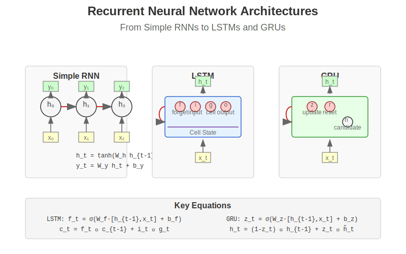
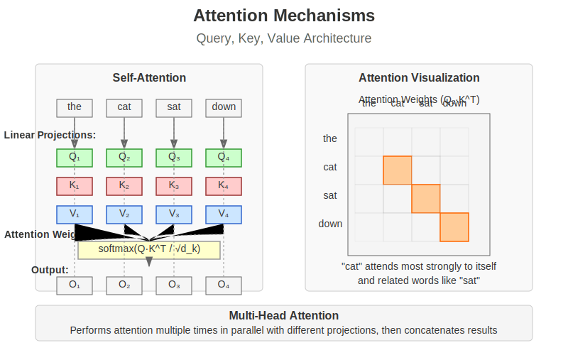
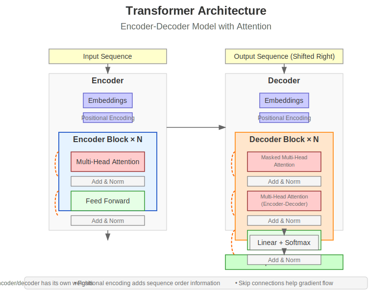
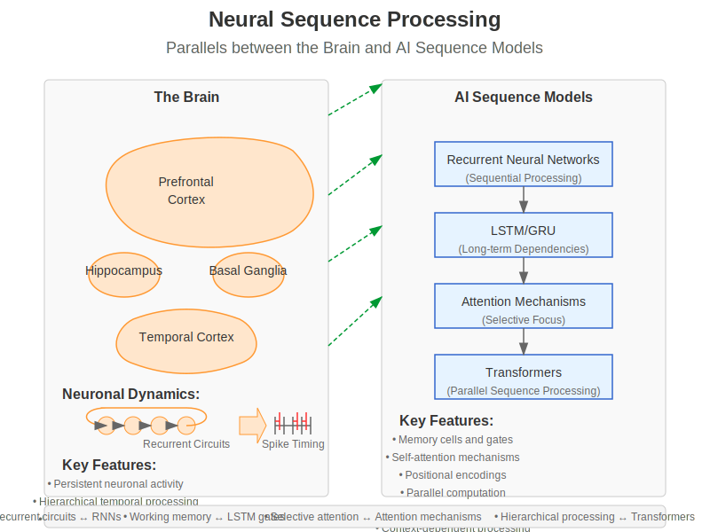

Chapter 11: Sequence Models: RNN → Attention → Transformer#
Learning Objectives
By the end of this chapter, you will be able to:
Understand the evolution of sequence models from RNNs to Transformers
Master the architectures and training methods for recurrent networks, attention mechanisms, and transformer models
Connect sequence model operations to temporal processing in the brain
Implement key sequence modeling architectures for various tasks
Compare different approaches to handling sequential data
11.1 Recurrent Neural Networks#
Recurrent Neural Networks (RNNs) are specialized neural networks designed to process sequential data by maintaining an internal state (memory) that captures information about previous inputs. Unlike feedforward networks, RNNs have connections that loop back on themselves, allowing them to persist information across time steps.
 Figure 11.1: Recurrent Neural Network architectures, showing the basic RNN, LSTM, and GRU cells with their internal structures.
11.1.1 Vanilla RNNs#
The simplest RNN architecture maintains a hidden state that is updated at each time step:
import numpy as np
import torch
import torch.nn as nn
import torch.optim as optim
import matplotlib.pyplot as plt
class SimpleRNN(nn.Module):
def __init__(self, input_size, hidden_size, output_size):
"""
A basic RNN implementation.
Args:
input_size: Size of input features at each time step
hidden_size: Size of hidden state
output_size: Size of output at each time step
"""
super(SimpleRNN, self).__init__()
self.hidden_size = hidden_size
# Input to hidden weights
self.i2h = nn.Linear(input_size + hidden_size, hidden_size)
# Hidden to output weights
self.h2o = nn.Linear(hidden_size, output_size)
# Activation function
self.tanh = nn.Tanh()
self.softmax = nn.LogSoftmax(dim=1)
def forward(self, input, hidden):
"""Forward pass through the RNN for a single time step."""
# Combine input and hidden state
combined = torch.cat((input, hidden), 1)
# Calculate new hidden state
hidden = self.tanh(self.i2h(combined))
# Calculate output
output = self.softmax(self.h2o(hidden))
return output, hidden
def init_hidden(self, batch_size=1):
"""Initialize the hidden state with zeros."""
return torch.zeros(batch_size, self.hidden_size)
def process_sequence(self, sequence):
"""Process a sequence of inputs and return all outputs and final hidden state."""
# Initialize hidden state
hidden = self.init_hidden(sequence.size(0))
# Storage for outputs at each time step
outputs = []
# Process each time step
for i in range(sequence.size(1)):
output, hidden = self.forward(sequence[:, i, :], hidden)
outputs.append(output)
# Stack outputs along time dimension
outputs = torch.stack(outputs, dim=1)
return outputs, hidden
# Example usage on a toy sequence problem
def simple_rnn_example():
"""Demonstrate a simple RNN on a toy sequence task."""
# Create sample data: learning to recognize sequences ending with [1, 2, 3]
def generate_sample(length=10):
# Generate random sequence of 0-4
sequence = torch.randint(0, 5, (length,)).long()
# Check if the last three elements are [1, 2, 3]
target = 1 if torch.all(sequence[-3:] == torch.tensor([1, 2, 3])) else 0
# One-hot encode the sequence
one_hot_sequence = torch.nn.functional.one_hot(sequence, num_classes=5).float()
return one_hot_sequence, target
# Generate training data
train_data = [generate_sample() for _ in range(1000)]
# Define model
input_size = 5 # One-hot encoding of 5 possible values
hidden_size = 10
output_size = 2 # Binary classification
model = SimpleRNN(input_size, hidden_size, output_size)
# Loss function and optimizer
criterion = nn.NLLLoss()
optimizer = optim.Adam(model.parameters(), lr=0.01)
# Training loop
n_epochs = 20
batch_size = 32
losses = []
accuracies = []
for epoch in range(n_epochs):
model.train()
epoch_loss = 0
correct = 0
for i in range(0, len(train_data), batch_size):
# Get batch
batch = train_data[i:i+batch_size]
sequences = [item[0] for item in batch]
targets = torch.tensor([item[1] for item in batch])
# Pad sequences to the same length
max_len = max(seq.size(0) for seq in sequences)
padded_sequences = torch.zeros(len(sequences), max_len, input_size)
for j, seq in enumerate(sequences):
padded_sequences[j, :seq.size(0), :] = seq
# Forward pass
optimizer.zero_grad()
hidden = model.init_hidden(len(sequences))
outputs = []
for t in range(max_len):
output, hidden = model(padded_sequences[:, t, :], hidden)
outputs.append(output)
# We only care about the output at the last time step
final_output = outputs[-1]
# Calculate loss
loss = criterion(final_output, targets)
epoch_loss += loss.item()
# Backward pass
loss.backward()
optimizer.step()
# Calculate accuracy
pred = final_output.argmax(dim=1)
correct += (pred == targets).sum().item()
# Record metrics
losses.append(epoch_loss / len(train_data))
accuracies.append(correct / len(train_data))
print(f'Epoch {epoch+1}, Loss: {losses[-1]:.4f}, Accuracy: {accuracies[-1]:.4f}')
# Plot training progress
plt.figure(figsize=(12, 5))
plt.subplot(1, 2, 1)
plt.plot(losses)
plt.title('Training Loss')
plt.xlabel('Epoch')
plt.ylabel('Loss')
plt.grid(True)
plt.subplot(1, 2, 2)
plt.plot(accuracies)
plt.title('Training Accuracy')
plt.xlabel('Epoch')
plt.ylabel('Accuracy')
plt.grid(True)
plt.tight_layout()
return plt
The RNN updates its hidden state at each time step according to:
Where:
\(h_t\) is the hidden state at time \(t\)
\(x_t\) is the input at time \(t\)
\(W_{hh}\) is the hidden-to-hidden weights
\(W_{xh}\) is the input-to-hidden weights
\(b_h\) is the hidden bias
The output at each time step is typically computed as:
Biological Parallel: RNNs resemble recurrent circuits in the brain where neural activity can persist and influence future processing. The prefrontal cortex maintains information over time through recurrent connections, similar to how RNNs maintain a hidden state.
11.1.2 The Vanishing/Exploding Gradient Problem#
Standard RNNs struggle with long-term dependencies due to the vanishing or exploding gradient problem. When backpropagating through many time steps, gradients can either:
Vanish - becoming extremely small, making learning long-range dependencies impossible
Explode - becoming extremely large, causing unstable training
def demonstrate_gradient_problems():
"""Visualize the vanishing gradient problem in RNNs."""
# Number of time steps
T = 100
# Different values for recurrent weights
recurrent_weights = [0.5, 0.9, 1.0, 1.1, 1.5]
plt.figure(figsize=(10, 6))
for weight in recurrent_weights:
# Calculate gradient scaling factor at each time step
# For simplicity, we model how the gradient scales based on the recurrent weight
gradient_scale = [weight ** t for t in range(T)]
# Plot on log scale
plt.semilogy(gradient_scale, label=f'Weight = {weight}')
plt.axhline(y=1.0, color='k', linestyle='--', alpha=0.3)
plt.xlabel('Time Steps Backward')
plt.ylabel('Gradient Scale Factor (log scale)')
plt.title('Vanishing/Exploding Gradients in RNNs')
plt.legend()
plt.grid(True)
plt.tight_layout()
return plt
This problem occurs because during backpropagation through time, the gradient is multiplied by the recurrent weight matrix repeatedly, leading to exponential growth or decay.
11.1.3 LSTMs and GRUs#
To address the vanishing gradient problem, Long Short-Term Memory (LSTM) networks and Gated Recurrent Units (GRUs) were developed with gating mechanisms to control information flow.
LSTM Architecture#
LSTMs introduce a cell state and three gates:
Forget Gate: Controls what information to throw away from the cell state
Input Gate: Controls what new information to add to the cell state
Output Gate: Controls what information from the cell state to output
class CustomLSTM(nn.Module):
def __init__(self, input_size, hidden_size):
"""
A custom LSTM implementation to demonstrate the internal mechanisms.
Args:
input_size: Size of input features
hidden_size: Size of hidden state and cell state
"""
super(CustomLSTM, self).__init__()
self.hidden_size = hidden_size
# Forget gate: determine what to remove from cell state
self.forget_gate = nn.Linear(input_size + hidden_size, hidden_size)
# Input gate: determine what to add to cell state
self.input_gate = nn.Linear(input_size + hidden_size, hidden_size)
# Cell state candidate: new values to add to cell state
self.cell_candidate = nn.Linear(input_size + hidden_size, hidden_size)
# Output gate: determine what to output from cell state
self.output_gate = nn.Linear(input_size + hidden_size, hidden_size)
# Activation functions
self.sigmoid = nn.Sigmoid()
self.tanh = nn.Tanh()
def forward(self, x, hidden):
"""Forward pass through the LSTM cell for a single time step."""
h_prev, c_prev = hidden
# Combine input and previous hidden state
combined = torch.cat((x, h_prev), dim=1)
# Forget gate: what to forget from cell state
f_t = self.sigmoid(self.forget_gate(combined))
# Input gate: what new information to add
i_t = self.sigmoid(self.input_gate(combined))
# Cell candidate: potential new values for cell state
c_tilde = self.tanh(self.cell_candidate(combined))
# Cell state update
c_t = f_t * c_prev + i_t * c_tilde
# Output gate: what to expose from cell state
o_t = self.sigmoid(self.output_gate(combined))
# Hidden state update
h_t = o_t * self.tanh(c_t)
return (h_t, c_t)
The LSTM updates are governed by these equations:
Forget gate: \(f_t = \sigma(W_f \cdot [h_{t-1}, x_t] + b_f)\)
Input gate: \(i_t = \sigma(W_i \cdot [h_{t-1}, x_t] + b_i)\)
Cell candidate: \(\tilde{C}_t = \tanh(W_C \cdot [h_{t-1}, x_t] + b_C)\)
Cell state update: \(C_t = f_t \odot C_{t-1} + i_t \odot \tilde{C}_t\)
Output gate: \(o_t = \sigma(W_o \cdot [h_{t-1}, x_t] + b_o)\)
Hidden state update: \(h_t = o_t \odot \tanh(C_t)\)
Where \(\odot\) represents element-wise multiplication.
GRU Architecture#
Gated Recurrent Units (GRUs) are a simplified version of LSTMs with two gates:
Reset Gate: Controls how much of the previous hidden state to use
Update Gate: Controls how much of the new hidden state to use
class CustomGRU(nn.Module):
def __init__(self, input_size, hidden_size):
"""
A custom GRU implementation to demonstrate the internal mechanisms.
Args:
input_size: Size of input features
hidden_size: Size of hidden state
"""
super(CustomGRU, self).__init__()
self.hidden_size = hidden_size
# Reset gate: determine how much of previous hidden state to use
self.reset_gate = nn.Linear(input_size + hidden_size, hidden_size)
# Update gate: determine how much to update the hidden state
self.update_gate = nn.Linear(input_size + hidden_size, hidden_size)
# Candidate hidden state
self.hidden_candidate = nn.Linear(input_size + hidden_size, hidden_size)
# Activation functions
self.sigmoid = nn.Sigmoid()
self.tanh = nn.Tanh()
def forward(self, x, h_prev):
"""Forward pass through the GRU cell for a single time step."""
# Combine input and previous hidden state
combined = torch.cat((x, h_prev), dim=1)
# Reset gate: how much of the previous hidden state to use
r_t = self.sigmoid(self.reset_gate(combined))
# Update gate: how much to update the hidden state
z_t = self.sigmoid(self.update_gate(combined))
# Combined input for candidate hidden state
reset_combined = torch.cat((x, r_t * h_prev), dim=1)
# Candidate hidden state
h_tilde = self.tanh(self.hidden_candidate(reset_combined))
# Hidden state update
h_t = (1 - z_t) * h_prev + z_t * h_tilde
return h_t
The GRU updates are governed by these equations:
Reset gate: \(r_t = \sigma(W_r \cdot [h_{t-1}, x_t] + b_r)\)
Update gate: \(z_t = \sigma(W_z \cdot [h_{t-1}, x_t] + b_z)\)
Candidate hidden: \(\tilde{h}_t = \tanh(W_h \cdot [r_t \odot h_{t-1}, x_t] + b_h)\)
Hidden state update: \(h_t = (1 - z_t) \odot h_{t-1} + z_t \odot \tilde{h}_t\)
Biological Parallel: The gating mechanisms in LSTMs and GRUs resemble neuromodulatory systems in the brain that regulate information flow. For example, dopamine can modulate which information is maintained in working memory, similar to how LSTM gates control what information is stored in the cell state.
11.1.4 Bidirectional RNNs#
In many sequence processing tasks, future context is just as important as past context. Bidirectional RNNs process the sequence in both directions:
class BidirectionalRNN(nn.Module):
def __init__(self, input_size, hidden_size, output_size):
"""
A simple bidirectional RNN implementation.
Args:
input_size: Size of input features
hidden_size: Size of hidden state
output_size: Size of output
"""
super(BidirectionalRNN, self).__init__()
self.hidden_size = hidden_size
# Forward RNN
self.forward_rnn = nn.GRU(input_size, hidden_size, batch_first=True)
# Backward RNN
self.backward_rnn = nn.GRU(input_size, hidden_size, batch_first=True)
# Combined output layer
self.output_layer = nn.Linear(hidden_size * 2, output_size)
def forward(self, x):
"""
Process sequence in both directions.
Args:
x: Input sequence tensor of shape (batch_size, seq_len, input_size)
"""
# Forward pass
forward_out, _ = self.forward_rnn(x)
# Backward pass (reverse the sequence)
reversed_x = torch.flip(x, [1]) # Reverse along sequence dimension
backward_out, _ = self.backward_rnn(reversed_x)
backward_out = torch.flip(backward_out, [1]) # Flip back to match forward
# Combine the two directions
combined = torch.cat((forward_out, backward_out), dim=2)
# Generate output
output = self.output_layer(combined)
return output
Bidirectional RNNs are particularly useful for tasks like speech recognition, machine translation, and named entity recognition, where the entire sequence is available during inference.
Biological Parallel: The brain often uses both predictive and retrospective processing when interpreting sequences. For example, in language processing, later words in a sentence can change the interpretation of earlier words.
11.1.5 Applications in Neuroscience#
RNNs have been used extensively to model neural circuits and brain functions:
def train_rnn_on_neural_data():
"""Example of using RNNs to model neural time series data."""
# This would typically involve:
# 1. Loading neural recording data (e.g., spike trains or calcium imaging)
# 2. Preprocessing into appropriate sequences
# 3. Training an RNN to predict neural activity or behavior
# Simulated neural data for demonstration
n_neurons = 50
n_timesteps = 100
n_trials = 200
# Simulated spike trains - binary activity patterns
np.random.seed(42)
neural_data = np.random.binomial(1, 0.1, (n_trials, n_timesteps, n_neurons))
# Add some structure - make neurons 0-10 active at time 30-40 with higher probability
neural_data[:, 30:40, :10] = np.random.binomial(1, 0.8, (n_trials, 10, 10))
# Convert to tensor
neural_data_tensor = torch.FloatTensor(neural_data)
# Define task: predict activity at t+1 from activity at t
X = neural_data_tensor[:, :-1, :] # All timepoints except the last
y = neural_data_tensor[:, 1:, :] # All timepoints except the first
# Split into train/test
train_size = int(0.8 * n_trials)
X_train, X_test = X[:train_size], X[train_size:]
y_train, y_test = y[:train_size], y[train_size:]
# Define an RNN model (we'll use PyTorch's built-in GRU)
model = nn.Sequential(
nn.GRU(n_neurons, 100, batch_first=True, return_sequences=True),
nn.Linear(100, n_neurons),
nn.Sigmoid() # For binary prediction
)
# Simplified diagram of RNN modeling neural circuits
plt.figure(figsize=(10, 6))
# Draw the neural data raster plot
plt.subplot(2, 1, 1)
plt.imshow(neural_data[0].T, aspect='auto', cmap='binary')
plt.title('Example Neural Activity')
plt.ylabel('Neuron')
plt.xlabel('Time')
# Draw the RNN prediction schema
plt.subplot(2, 1, 2)
plt.plot([0.2, 0.8], [0.5, 0.5], 'b-', linewidth=2, label='Neural Data')
plt.plot([0.2, 0.8], [0.4, 0.4], 'r--', linewidth=2, label='RNN Prediction')
plt.xlim(0, 1)
plt.ylim(0, 1)
plt.legend()
plt.title('RNN Modeling Neural Dynamics')
plt.axis('off')
plt.tight_layout()
return plt
In neuroscience, RNNs have been used to:
Model working memory in the prefrontal cortex
Simulate motor sequence learning in the basal ganglia
Capture dynamic responses in sensory cortices
Model decision-making processes in frontal areas
The recurrent connectivity in these networks resembles the recurrent circuits found throughout the brain, making them natural models of neural dynamics.
11.2 Attention Mechanisms#
While RNNs excel at sequential processing, they struggle with long-range dependencies. Attention mechanisms address this limitation by allowing the model to focus on relevant parts of the input sequence when producing each output element, regardless of their distance.
 Figure 11.2: Attention mechanism architecture showing query, key, value operations and how attention weights are computed and applied.
11.2.1 The Intuition Behind Attention#
Attention mimics a cognitive process: when processing complex information, humans focus on relevant parts while ignoring irrelevant details. For example, when translating a long sentence, a human translator might focus on specific source words when generating each target word.
def attention_intuition():
"""Visualize the intuition behind attention."""
# Create a simple sentence for visualization
source = "The small cat sleeps on the comfortable blue mat"
target = "Le petit chat dort sur le tapis bleu confortable"
# Split into words
source_words = source.split()
target_words = target.split()
# Simulate attention weights (would normally be learned)
# Each row corresponds to a target word, each column to a source word
attention_weights = np.zeros((len(target_words), len(source_words)))
# Set attention based on word alignment (simplified for visualization)
alignments = {
0: [0], # Le -> The
1: [1], # petit -> small
2: [2], # chat -> cat
3: [3], # dort -> sleeps
4: [4], # sur -> on
5: [5], # le -> the
6: [7, 8], # tapis bleu -> blue mat
7: [6] # confortable -> comfortable
}
# Fill in attention weights
for target_idx, source_idxs in alignments.items():
for source_idx in source_idxs:
attention_weights[target_idx, source_idx] = 1.0 / len(source_idxs)
# Create visualization
plt.figure(figsize=(12, 8))
plt.imshow(attention_weights, cmap='YlOrRd')
# Add labels
plt.xticks(np.arange(len(source_words)), source_words, rotation=45, ha='right')
plt.yticks(np.arange(len(target_words)), target_words)
plt.xlabel('Source (English)')
plt.ylabel('Target (French)')
plt.title('Attention Weights in Translation')
# Add a colorbar
plt.colorbar(label='Attention Weight')
plt.tight_layout()
return plt
11.2.2 Self-Attention#
Self-attention allows a sequence to attend to itself, capturing dependencies between elements regardless of their distance. The key innovation is computing attention weights using queries and keys derived from the same sequence.
class SelfAttention(nn.Module):
def __init__(self, hidden_size):
"""
Self-attention mechanism.
Args:
hidden_size: Dimensionality of input vectors
"""
super(SelfAttention, self).__init__()
self.hidden_size = hidden_size
# Linear projections for query, key, and value
self.query = nn.Linear(hidden_size, hidden_size)
self.key = nn.Linear(hidden_size, hidden_size)
self.value = nn.Linear(hidden_size, hidden_size)
# Scaling factor
self.scale = torch.sqrt(torch.FloatTensor([hidden_size])).item()
def forward(self, x, mask=None):
"""
Apply self-attention to input sequence.
Args:
x: Input tensor of shape [batch_size, seq_len, hidden_size]
mask: Optional mask tensor of shape [batch_size, seq_len, seq_len]
Returns:
attended: Output tensor after self-attention
attention_weights: Attention weight matrix
"""
batch_size, seq_len, _ = x.shape
# Linear projections
q = self.query(x) # [batch_size, seq_len, hidden_size]
k = self.key(x) # [batch_size, seq_len, hidden_size]
v = self.value(x) # [batch_size, seq_len, hidden_size]
# Compute attention scores
# q @ k.transpose(-2, -1) => [batch_size, seq_len, seq_len]
attention_scores = torch.matmul(q, k.transpose(-2, -1)) / self.scale
# Apply mask if provided (useful for padding or causal attention)
if mask is not None:
attention_scores = attention_scores.masked_fill(mask == 0, -1e10)
# Softmax to get attention weights
attention_weights = torch.softmax(attention_scores, dim=-1)
# Apply attention weights to values
attended = torch.matmul(attention_weights, v)
return attended, attention_weights
The self-attention operation is defined as:
Where:
\(Q\) (queries), \(K\) (keys), and \(V\) (values) are linear projections of the input
\(d_k\) is the dimensionality of the key vectors
The scaling factor \(\frac{1}{\sqrt{d_k}}\) prevents the softmax from reaching regions with extremely small gradients
Biological Parallel: Selective attention in the brain allows for focusing on relevant stimuli while suppressing irrelevant information. The thalamus and prefrontal cortex work together to control which information receives processing priority, similar to how attention weights prioritize certain parts of the input.
11.2.3 Multi-Head Attention#
Multi-head attention runs several attention mechanisms in parallel, allowing the model to jointly attend to information from different representation subspaces.
class MultiHeadAttention(nn.Module):
def __init__(self, hidden_size, num_heads):
"""
Multi-head attention mechanism.
Args:
hidden_size: Dimensionality of input vectors
num_heads: Number of attention heads
"""
super(MultiHeadAttention, self).__init__()
assert hidden_size % num_heads == 0, "hidden_size must be divisible by num_heads"
self.hidden_size = hidden_size
self.num_heads = num_heads
self.head_dim = hidden_size // num_heads
# Linear projections for query, key, and value
self.query = nn.Linear(hidden_size, hidden_size)
self.key = nn.Linear(hidden_size, hidden_size)
self.value = nn.Linear(hidden_size, hidden_size)
# Output projection
self.output_projection = nn.Linear(hidden_size, hidden_size)
# Scaling factor
self.scale = torch.sqrt(torch.FloatTensor([self.head_dim])).item()
def forward(self, query, key, value, mask=None):
"""
Apply multi-head attention.
Args:
query: Query tensor [batch_size, query_len, hidden_size]
key: Key tensor [batch_size, key_len, hidden_size]
value: Value tensor [batch_size, key_len, hidden_size]
mask: Optional mask tensor [batch_size, query_len, key_len]
Returns:
attended: Output tensor after multi-head attention
attention_weights: Attention weight tensor for each head
"""
batch_size = query.shape[0]
# Linear projections
Q = self.query(query) # [batch_size, query_len, hidden_size]
K = self.key(key) # [batch_size, key_len, hidden_size]
V = self.value(value) # [batch_size, key_len, hidden_size]
# Reshape for multi-head attention
# [batch_size, seq_len, hidden_size] -> [batch_size, seq_len, num_heads, head_dim]
Q = Q.view(batch_size, -1, self.num_heads, self.head_dim)
K = K.view(batch_size, -1, self.num_heads, self.head_dim)
V = V.view(batch_size, -1, self.num_heads, self.head_dim)
# Transpose to [batch_size, num_heads, seq_len, head_dim]
Q = Q.transpose(1, 2)
K = K.transpose(1, 2)
V = V.transpose(1, 2)
# Compute attention scores
# [batch_size, num_heads, query_len, key_len]
attention_scores = torch.matmul(Q, K.transpose(-2, -1)) / self.scale
# Apply mask if provided
if mask is not None:
# Expand mask for multiple heads
# [batch_size, query_len, key_len] -> [batch_size, 1, query_len, key_len]
mask = mask.unsqueeze(1)
attention_scores = attention_scores.masked_fill(mask == 0, -1e10)
# Softmax to get attention weights
attention_weights = torch.softmax(attention_scores, dim=-1)
# Apply attention weights to values
# [batch_size, num_heads, query_len, head_dim]
attended = torch.matmul(attention_weights, V)
# Transpose and reshape back
# [batch_size, num_heads, query_len, head_dim] -> [batch_size, query_len, num_heads, head_dim]
attended = attended.transpose(1, 2).contiguous()
# [batch_size, query_len, hidden_size]
attended = attended.view(batch_size, -1, self.hidden_size)
# Final linear projection
attended = self.output_projection(attended)
return attended, attention_weights
Multi-head attention expands on the basic attention mechanism with multiple attention “heads” operating in parallel, each looking at different aspects of the data:
Where:
Each \(\text{head}_i = \text{Attention}(QW_i^Q, KW_i^K, VW_i^V)\)
The \(W\) matrices are learned projection matrices
\(W^O\) is the output projection
11.2.4 Self-Attention vs. Recurrence#
Self-attention offers several advantages over recurrent networks:
Parallelization: Unlike RNNs, which process sequences step-by-step, self-attention processes all sequence elements simultaneously.
Long-range dependencies: Attention directly connects any two positions in the sequence, allowing for efficient modeling of long-range dependencies.
Interpretability: Attention weights can be visualized to understand which input elements the model focuses on when generating each output.
def compare_rnn_attention_complexity():
"""Compare computational complexity of RNNs vs. Attention"""
sequence_lengths = np.arange(10, 1001, 10)
# Computational complexity
rnn_sequential_ops = sequence_lengths # O(n) time steps for sequential processing
attention_parallel_ops = np.ones_like(sequence_lengths) # O(1) parallel processing
attention_memory_cost = sequence_lengths**2 # O(n²) attention matrix
# Plot comparison
plt.figure(figsize=(12, 6))
plt.subplot(1, 2, 1)
plt.plot(sequence_lengths, rnn_sequential_ops, 'r-', label='RNN (Sequential Steps)')
plt.plot(sequence_lengths, attention_parallel_ops, 'b-', label='Attention (Parallel)')
plt.xlabel('Sequence Length')
plt.ylabel('Sequential Operations')
plt.title('Computational Complexity (Time)')
plt.legend()
plt.grid(True)
plt.subplot(1, 2, 2)
plt.plot(sequence_lengths, attention_memory_cost, 'g-', label='Attention Matrix Size')
plt.xlabel('Sequence Length')
plt.ylabel('Memory Cost')
plt.title('Memory Requirements')
plt.legend()
plt.grid(True)
plt.tight_layout()
return plt
11.2.5 Scaled Dot-Product Attention#
The core attention mechanism in modern architectures is scaled dot-product attention:
def scaled_dot_product_attention(query, key, value, mask=None):
"""
Compute scaled dot-product attention.
Args:
query: Query tensor [batch_size, seq_len, d_k]
key: Key tensor [batch_size, seq_len, d_k]
value: Value tensor [batch_size, seq_len, d_v]
mask: Optional mask tensor [batch_size, seq_len, seq_len]
Returns:
output: Attended values
attention: Attention weights
"""
# Compute attention scores
d_k = query.size(-1)
scores = torch.matmul(query, key.transpose(-2, -1)) / np.sqrt(d_k)
# Apply mask if provided
if mask is not None:
scores = scores.masked_fill(mask == 0, -1e10)
# Apply softmax to get attention weights
attention = torch.softmax(scores, dim=-1)
# Apply attention weights to values
output = torch.matmul(attention, value)
return output, attention
11.2.6 Attention Visualization#
Visualizing attention weights can provide insight into how the model processes sequences:
def visualize_attention():
"""Create a visualization of attention patterns."""
# Sample sentence
sentence = "The quick brown fox jumps over the lazy dog"
words = sentence.split()
# Create simulated attention matrices
num_words = len(words)
# Self-attention: diagonal dominant (attends to self and nearby words)
self_attention = np.zeros((num_words, num_words))
for i in range(num_words):
for j in range(num_words):
self_attention[i, j] = 1.0 / (1 + abs(i - j))
# Normalize rows
self_attention = self_attention / self_attention.sum(axis=1, keepdims=True)
# Subject-verb attention: highlights grammatical relationships
subj_verb_attention = np.zeros((num_words, num_words))
subject_idx = 3 # 'fox'
verb_idx = 4 # 'jumps'
subj_verb_attention[subject_idx, verb_idx] = 0.7
subj_verb_attention[verb_idx, subject_idx] = 0.7
# Fill in other relationships
for i in range(num_words):
for j in range(num_words):
if i != subject_idx and j != verb_idx and i != verb_idx and j != subject_idx:
subj_verb_attention[i, j] = 0.1 / (num_words - 2)
# Plot attention matrices
fig, axes = plt.subplots(1, 2, figsize=(16, 6))
# Plot self-attention
im1 = axes[0].imshow(self_attention, cmap='YlOrRd')
axes[0].set_title('Self-Attention Pattern')
axes[0].set_xticks(np.arange(num_words))
axes[0].set_yticks(np.arange(num_words))
axes[0].set_xticklabels(words)
axes[0].set_yticklabels(words)
plt.setp(axes[0].get_xticklabels(), rotation=45, ha="right", rotation_mode="anchor")
fig.colorbar(im1, ax=axes[0])
# Plot subject-verb attention
im2 = axes[1].imshow(subj_verb_attention, cmap='YlOrRd')
axes[1].set_title('Subject-Verb Attention')
axes[1].set_xticks(np.arange(num_words))
axes[1].set_yticks(np.arange(num_words))
axes[1].set_xticklabels(words)
axes[1].set_yticklabels(words)
plt.setp(axes[1].get_xticklabels(), rotation=45, ha="right", rotation_mode="anchor")
fig.colorbar(im2, ax=axes[1])
# Add annotations
for i in range(num_words):
for j in range(num_words):
if self_attention[i, j] > 0.2:
axes[0].text(j, i, f"{self_attention[i, j]:.2f}",
ha="center", va="center", color="white" if self_attention[i, j] > 0.5 else "black")
if subj_verb_attention[i, j] > 0.2:
axes[1].text(j, i, f"{subj_verb_attention[i, j]:.2f}",
ha="center", va="center", color="white" if subj_verb_attention[i, j] > 0.5 else "black")
plt.tight_layout()
return plt
11.2.7 Neural Correlates of Attention#
The attention mechanisms in deep learning have interesting parallels with attention systems in the brain:
def neural_attention_parallels():
"""Illustrate parallels between artificial and neural attention."""
plt.figure(figsize=(12, 8))
# Create a simple diagram
plt.subplot(2, 1, 1)
plt.title('Neural Attention in the Brain')
plt.axis('off')
# Draw brain regions involved in attention
circle1 = plt.Circle((0.3, 0.5), 0.15, fc='#FFC78E', ec='black', label='PFC')
circle2 = plt.Circle((0.6, 0.5), 0.1, fc='#8EADFC', ec='black', label='Thalamus')
circle3 = plt.Circle((0.8, 0.6), 0.12, fc='#8EFCB8', ec='black', label='Visual Cortex')
plt.gca().add_patch(circle1)
plt.gca().add_patch(circle2)
plt.gca().add_patch(circle3)
# Add labels
plt.text(0.3, 0.5, 'PFC', ha='center', va='center')
plt.text(0.6, 0.5, 'Thalamus', ha='center', va='center')
plt.text(0.8, 0.6, 'Visual\nCortex', ha='center', va='center')
# Draw connections
plt.arrow(0.4, 0.5, 0.1, 0.0, head_width=0.02, head_length=0.02, fc='black', ec='black')
plt.arrow(0.7, 0.5, 0.05, 0.05, head_width=0.02, head_length=0.02, fc='black', ec='black')
# Add explanatory text
plt.text(0.5, 0.8, "The prefrontal cortex (PFC) directs attention via the thalamus,\nselectively enhancing processing in sensory areas",
ha='center', va='center', bbox=dict(facecolor='white', alpha=0.5))
# Machine attention mechanism
plt.subplot(2, 1, 2)
plt.title('Artificial Attention Mechanism')
plt.axis('off')
# Draw components
rect1 = plt.Rectangle((0.2, 0.4), 0.15, 0.2, fc='#FFC78E', ec='black')
rect2 = plt.Rectangle((0.5, 0.4), 0.15, 0.2, fc='#8EADFC', ec='black')
rect3 = plt.Rectangle((0.8, 0.4), 0.15, 0.2, fc='#8EFCB8', ec='black')
plt.gca().add_patch(rect1)
plt.gca().add_patch(rect2)
plt.gca().add_patch(rect3)
# Add labels
plt.text(0.275, 0.5, 'Query', ha='center', va='center')
plt.text(0.575, 0.5, 'Attention\nWeights', ha='center', va='center')
plt.text(0.875, 0.5, 'Value', ha='center', va='center')
# Draw connections
plt.arrow(0.35, 0.5, 0.15, 0.0, head_width=0.02, head_length=0.02, fc='black', ec='black')
plt.arrow(0.65, 0.5, 0.15, 0.0, head_width=0.02, head_length=0.02, fc='black', ec='black')
# Add explanatory text
plt.text(0.5, 0.2, "Neural network attention uses queries to compute weights\nthat determine which values are most relevant",
ha='center', va='center', bbox=dict(facecolor='white', alpha=0.5))
plt.tight_layout()
return plt
These parallels include:
Selective Enhancement: Both neural and artificial attention selectively enhance processing of relevant information.
Top-down Control: The prefrontal cortex provides top-down control in the brain, similar to how queries direct attention in artificial systems.
Resource Allocation: Both systems efficiently allocate limited processing resources to the most important inputs.
Context Integration: Both integrate contextual information to determine what’s relevant in the current situation.
11.3 Transformer Architecture#
The Transformer architecture, introduced in the landmark paper “Attention Is All You Need” (Vaswani et al., 2017), revolutionized sequence processing by eliminating recurrence entirely and relying solely on attention mechanisms.
 Figure 11.3: The Transformer architecture featuring an encoder-decoder structure with multi-head attention, positional encodings, and feed-forward networks.
11.3.1 Overall Architecture#
The Transformer follows an encoder-decoder structure:
class Transformer(nn.Module):
def __init__(self, src_vocab_size, tgt_vocab_size, d_model, n_heads, n_layers, d_ff,
max_seq_len, dropout=0.1):
"""
Full Transformer architecture for sequence-to-sequence tasks.
Args:
src_vocab_size: Size of source vocabulary
tgt_vocab_size: Size of target vocabulary
d_model: Model dimension (embedding size)
n_heads: Number of attention heads
n_layers: Number of encoder/decoder layers
d_ff: Hidden dimension in feed-forward networks
max_seq_len: Maximum sequence length for positional encodings
dropout: Dropout rate
"""
super(Transformer, self).__init__()
# Embeddings and positional encodings
self.src_embedding = nn.Embedding(src_vocab_size, d_model)
self.tgt_embedding = nn.Embedding(tgt_vocab_size, d_model)
self.positional_encoding = self.create_positional_encoding(max_seq_len, d_model)
# Encoder and decoder
self.encoder = TransformerEncoder(d_model, n_heads, n_layers, d_ff, dropout)
self.decoder = TransformerDecoder(d_model, n_heads, n_layers, d_ff, dropout)
# Final linear layer
self.final_layer = nn.Linear(d_model, tgt_vocab_size)
# Dropout
self.dropout = nn.Dropout(dropout)
# Initialize parameters
self.init_parameters()
def create_positional_encoding(self, max_seq_len, d_model):
"""Create sinusoidal positional encodings."""
# Create a tensor for positions
positions = torch.arange(0, max_seq_len).unsqueeze(1).float()
# Create a tensor for dimension indices
div_term = torch.exp(torch.arange(0, d_model, 2).float() * -(math.log(10000.0) / d_model))
# Create positional encoding
pe = torch.zeros(max_seq_len, d_model)
pe[:, 0::2] = torch.sin(positions * div_term) # Even dimensions
pe[:, 1::2] = torch.cos(positions * div_term) # Odd dimensions
# Add batch dimension and register as buffer (not a parameter)
pe = pe.unsqueeze(0)
return nn.Parameter(pe, requires_grad=False)
def init_parameters(self):
"""Initialize model parameters."""
for p in self.parameters():
if p.dim() > 1:
nn.init.xavier_uniform_(p)
def forward(self, src, tgt, src_mask=None, tgt_mask=None, src_padding_mask=None, tgt_padding_mask=None):
"""
Forward pass through the Transformer.
Args:
src: Source sequence [batch_size, src_len]
tgt: Target sequence [batch_size, tgt_len]
src_mask: Mask for source self-attention
tgt_mask: Mask for target self-attention (usually causal)
src_padding_mask: Mask for source padding
tgt_padding_mask: Mask for target padding
Returns:
output: Vocabulary distributions [batch_size, tgt_len, tgt_vocab_size]
"""
# Get sequence lengths
src_len = src.size(1)
tgt_len = tgt.size(1)
# Embed and add positional encoding
src_embedded = self.src_embedding(src) * math.sqrt(self.d_model)
src_embedded = src_embedded + self.positional_encoding[:, :src_len]
src_embedded = self.dropout(src_embedded)
tgt_embedded = self.tgt_embedding(tgt) * math.sqrt(self.d_model)
tgt_embedded = tgt_embedded + self.positional_encoding[:, :tgt_len]
tgt_embedded = self.dropout(tgt_embedded)
# Encoder pass
encoder_output = self.encoder(src_embedded, src_mask, src_padding_mask)
# Decoder pass
decoder_output = self.decoder(tgt_embedded, encoder_output, tgt_mask, tgt_padding_mask, src_padding_mask)
# Final projection to vocabulary
output = self.final_layer(decoder_output)
return output
The Transformer consists of two main components:
Encoder: Processes the input sequence into a continuous representation
Decoder: Generates the output sequence based on the encoder representation and previous outputs
11.3.2 Encoder#
The encoder consists of N identical layers, each with two sub-layers:
class TransformerEncoderLayer(nn.Module):
def __init__(self, d_model, n_heads, d_ff, dropout=0.1):
"""
Single Transformer encoder layer.
Args:
d_model: Model dimension
n_heads: Number of attention heads
d_ff: Hidden dimension in feed-forward network
dropout: Dropout rate
"""
super(TransformerEncoderLayer, self).__init__()
# Multi-head self-attention
self.self_attention = MultiHeadAttention(d_model, n_heads)
# Feed-forward network
self.feed_forward = nn.Sequential(
nn.Linear(d_model, d_ff),
nn.ReLU(),
nn.Linear(d_ff, d_model)
)
# Layer normalization
self.norm1 = nn.LayerNorm(d_model)
self.norm2 = nn.LayerNorm(d_model)
# Dropout
self.dropout = nn.Dropout(dropout)
def forward(self, x, mask=None):
"""
Forward pass through encoder layer.
Args:
x: Input tensor [batch_size, seq_len, d_model]
mask: Optional attention mask
Returns:
x: Output tensor [batch_size, seq_len, d_model]
"""
# Self-attention sub-layer with residual connection and layer normalization
attn_output, _ = self.self_attention(x, x, x, mask)
x = self.norm1(x + self.dropout(attn_output))
# Feed-forward sub-layer with residual connection and layer normalization
ff_output = self.feed_forward(x)
x = self.norm2(x + self.dropout(ff_output))
return x
The complete encoder stacks multiple encoder layers:
class TransformerEncoder(nn.Module):
def __init__(self, d_model, n_heads, n_layers, d_ff, dropout=0.1):
"""
Full Transformer encoder with N layers.
Args:
d_model: Model dimension
n_heads: Number of attention heads
n_layers: Number of encoder layers
d_ff: Hidden dimension in feed-forward network
dropout: Dropout rate
"""
super(TransformerEncoder, self).__init__()
# Stack of encoder layers
self.layers = nn.ModuleList(
[TransformerEncoderLayer(d_model, n_heads, d_ff, dropout) for _ in range(n_layers)]
)
def forward(self, x, mask=None, padding_mask=None):
"""
Forward pass through the encoder.
Args:
x: Input tensor [batch_size, seq_len, d_model]
mask: Self-attention mask
padding_mask: Mask for padding tokens
Returns:
x: Encoded representation [batch_size, seq_len, d_model]
"""
# Apply padding mask to attention mask if provided
if padding_mask is not None:
if mask is None:
mask = padding_mask
else:
mask = mask & padding_mask
# Pass through each encoder layer
for layer in self.layers:
x = layer(x, mask)
return x
11.3.3 Decoder#
The decoder is similar to the encoder but has an additional cross-attention layer:
class TransformerDecoderLayer(nn.Module):
def __init__(self, d_model, n_heads, d_ff, dropout=0.1):
"""
Single Transformer decoder layer.
Args:
d_model: Model dimension
n_heads: Number of attention heads
d_ff: Hidden dimension in feed-forward network
dropout: Dropout rate
"""
super(TransformerDecoderLayer, self).__init__()
# Multi-head self-attention
self.self_attention = MultiHeadAttention(d_model, n_heads)
# Multi-head cross-attention to encoder outputs
self.cross_attention = MultiHeadAttention(d_model, n_heads)
# Feed-forward network
self.feed_forward = nn.Sequential(
nn.Linear(d_model, d_ff),
nn.ReLU(),
nn.Linear(d_ff, d_model)
)
# Layer normalization
self.norm1 = nn.LayerNorm(d_model)
self.norm2 = nn.LayerNorm(d_model)
self.norm3 = nn.LayerNorm(d_model)
# Dropout
self.dropout = nn.Dropout(dropout)
def forward(self, x, encoder_output, tgt_mask=None, tgt_padding_mask=None, src_padding_mask=None):
"""
Forward pass through decoder layer.
Args:
x: Input tensor [batch_size, tgt_len, d_model]
encoder_output: Output from encoder [batch_size, src_len, d_model]
tgt_mask: Mask for target self-attention (usually causal)
tgt_padding_mask: Mask for target padding
src_padding_mask: Mask for source padding
Returns:
x: Output tensor [batch_size, tgt_len, d_model]
"""
# Self-attention sub-layer with residual connection and layer normalization
attn_output, _ = self.self_attention(x, x, x, tgt_mask)
x = self.norm1(x + self.dropout(attn_output))
# Cross-attention sub-layer with residual connection and layer normalization
cross_attn_output, _ = self.cross_attention(x, encoder_output, encoder_output, src_padding_mask)
x = self.norm2(x + self.dropout(cross_attn_output))
# Feed-forward sub-layer with residual connection and layer normalization
ff_output = self.feed_forward(x)
x = self.norm3(x + self.dropout(ff_output))
return x
The complete decoder stacks multiple decoder layers:
class TransformerDecoder(nn.Module):
def __init__(self, d_model, n_heads, n_layers, d_ff, dropout=0.1):
"""
Full Transformer decoder with N layers.
Args:
d_model: Model dimension
n_heads: Number of attention heads
n_layers: Number of decoder layers
d_ff: Hidden dimension in feed-forward network
dropout: Dropout rate
"""
super(TransformerDecoder, self).__init__()
# Stack of decoder layers
self.layers = nn.ModuleList(
[TransformerDecoderLayer(d_model, n_heads, d_ff, dropout) for _ in range(n_layers)]
)
def forward(self, x, encoder_output, tgt_mask=None, tgt_padding_mask=None, src_padding_mask=None):
"""
Forward pass through the decoder.
Args:
x: Input tensor [batch_size, tgt_len, d_model]
encoder_output: Output from encoder [batch_size, src_len, d_model]
tgt_mask: Mask for target self-attention (usually causal)
tgt_padding_mask: Mask for target padding
src_padding_mask: Mask for source padding
Returns:
x: Decoded representation [batch_size, tgt_len, d_model]
"""
# Pass through each decoder layer
for layer in self.layers:
x = layer(x, encoder_output, tgt_mask, tgt_padding_mask, src_padding_mask)
return x
11.3.4 Positional Encodings#
Since the Transformer doesn’t use recurrence or convolution, it needs a way to incorporate sequence order. Positional encodings add positional information to the input embeddings:
def create_positional_encodings(max_len, d_model):
"""
Create sinusoidal positional encodings.
Args:
max_len: Maximum sequence length
d_model: Model dimension
Returns:
pos_encoding: Positional encoding tensor [1, max_len, d_model]
"""
# Create a tensor for positions
positions = torch.arange(0, max_len).float().unsqueeze(1)
# Create a tensor for dimension indices
div_term = torch.exp(torch.arange(0, d_model, 2).float() * -(math.log(10000.0) / d_model))
# Create positional encoding
pos_encoding = torch.zeros(max_len, d_model)
pos_encoding[:, 0::2] = torch.sin(positions * div_term) # Even dimensions
pos_encoding[:, 1::2] = torch.cos(positions * div_term) # Odd dimensions
# Add batch dimension
pos_encoding = pos_encoding.unsqueeze(0)
return pos_encoding
def visualize_positional_encodings():
"""Visualize positional encodings."""
# Create positional encodings
max_len = 100
d_model = 128
pos_encoding = create_positional_encodings(max_len, d_model).squeeze(0).numpy()
# Plot as a heatmap
plt.figure(figsize=(10, 6))
plt.imshow(pos_encoding, cmap='viridis', aspect='auto')
plt.xlabel('Embedding Dimension')
plt.ylabel('Position in Sequence')
plt.title('Sinusoidal Positional Encodings')
plt.colorbar()
# Plot a few dimensions across positions
plt.figure(figsize=(10, 6))
for dim in [0, 1, 2, 3, 63, 64, 65, 66, 127]:
plt.plot(pos_encoding[:, dim], label=f'Dim {dim}')
plt.xlabel('Position')
plt.ylabel('Value')
plt.title('Positional Encoding Values by Dimension')
plt.legend()
plt.grid(True)
return plt
The positional encodings use sine and cosine functions of different frequencies:
This approach allows the model to easily learn to attend to relative positions since \(PE_{pos+k}\) can be represented as a linear function of \(PE_{pos}\).
11.3.5 Feed-Forward Networks#
Each encoder and decoder layer contains a position-wise feed-forward network:
class PositionwiseFeedForward(nn.Module):
def __init__(self, d_model, d_ff, dropout=0.1):
"""
Position-wise feed-forward network.
Args:
d_model: Model dimension
d_ff: Hidden dimension
dropout: Dropout rate
"""
super(PositionwiseFeedForward, self).__init__()
self.fc1 = nn.Linear(d_model, d_ff)
self.fc2 = nn.Linear(d_ff, d_model)
self.dropout = nn.Dropout(dropout)
def forward(self, x):
"""
Apply feed-forward network to input.
Args:
x: Input tensor [batch_size, seq_len, d_model]
Returns:
output: Transformed tensor [batch_size, seq_len, d_model]
"""
output = self.dropout(torch.relu(self.fc1(x)))
output = self.fc2(output)
return output
These networks apply two linear transformations with a ReLU activation in between:
The feed-forward networks process each position independently, which is why they’re sometimes called “position-wise” feed-forward networks.
11.3.6 Residual Connections and Layer Normalization#
The Transformer uses residual connections around each sub-layer, followed by layer normalization:
class AddNorm(nn.Module):
def __init__(self, size, dropout=0.1):
"""
Residual connection followed by layer normalization.
Args:
size: Feature dimension
dropout: Dropout rate
"""
super(AddNorm, self).__init__()
self.norm = nn.LayerNorm(size)
self.dropout = nn.Dropout(dropout)
def forward(self, x, sublayer_output):
"""
Apply residual connection and layer normalization.
Args:
x: Input tensor
sublayer_output: Output from sublayer
Returns:
normalized: Normalized output with residual connection
"""
# Add residual connection and normalize
return self.norm(x + self.dropout(sublayer_output))
Layer normalization normalizes the inputs across the feature dimension, stabilizing the network’s activations:
Where:
\(\mu\) and \(\sigma\) are the mean and standard deviation of the inputs
\(\gamma\) and \(\beta\) are learned parameters
\(\epsilon\) is a small constant for numerical stability
11.3.7 Biological Parallels#
The Transformer architecture has several interesting parallels with neural processing:
def transformer_brain_parallels():
"""Illustrate parallels between Transformers and brain processing."""
plt.figure(figsize=(12, 8))
# Create a two-row comparison
plt.subplot(2, 1, 1)
plt.title('Parallel Processing in Transformers')
plt.axis('off')
# Draw Transformer components
for i in range(5):
x_pos = 0.1 + i * 0.2
plt.rectangle((x_pos, 0.3), 0.1, 0.4, fc='lightblue', ec='black')
plt.arrow(x_pos + 0.05, 0.7, 0, 0.1, head_width=0.02, head_length=0.02, fc='black', ec='black')
plt.text(x_pos + 0.05, 0.2, f"Token {i+1}", ha='center')
# Add attention illustration
for i in range(5):
for j in range(5):
alpha = 0.3 if i != j else 0.8
plt.plot([0.1 + i * 0.2 + 0.05, 0.1 + j * 0.2 + 0.05], [0.5, 0.5], 'r-', alpha=alpha)
# Second row for brain
plt.subplot(2, 1, 2)
plt.title('Distributed Processing in Brain Networks')
plt.axis('off')
# Draw brain regions
regions = [(0.2, 0.5), (0.4, 0.7), (0.5, 0.4), (0.7, 0.6), (0.8, 0.3)]
for i, (x, y) in enumerate(regions):
circle = plt.Circle((x, y), 0.05, fc='#FFC78E', ec='black')
plt.gca().add_patch(circle)
plt.text(x, y, f"R{i+1}", ha='center', va='center', fontsize=8)
# Draw connections between regions
for i, (x1, y1) in enumerate(regions):
for j, (x2, y2) in enumerate(regions):
if i != j:
plt.plot([x1, x2], [y1, y2], 'b-', alpha=0.3)
# Add explanatory text
plt.text(0.5, 0.1, "Both systems feature distributed parallel processing\nwith selective connections between elements",
ha='center', va='center', bbox=dict(facecolor='white', alpha=0.5))
plt.tight_layout()
return plt
Key parallels include:
Parallel Processing: The brain processes information in parallel across multiple regions, similar to how Transformers process all sequence positions simultaneously.
Selective Attention: Neural attention processes selectively enhance specific information paths, similar to attention mechanisms in Transformers.
Hierarchical Processing: Both the brain and Transformers use hierarchical layers of processing, with higher levels building on lower-level representations.
Distributed Representations: Neural processing involves distributed representations across populations of neurons, similar to the distributed embeddings in Transformers.
However, these are high-level analogies rather than direct functional equivalents.
11.4 Neural Sequence Processing#
The brain is fundamentally a sequence processing system. From processing sensory streams to controlling motor behaviors, neural circuits specialize in handling temporally structured information. This section explores how biological sequence processing relates to artificial sequence models we’ve discussed.
 Figure 11.4: Comparison of sequence processing mechanisms in the brain and neural networks, highlighting temporal dynamics, working memory, and hierarchical processing.
11.4.1 Temporal Dynamics in Cortical Circuits#
Cortical circuits exhibit rich temporal dynamics that enable sequence processing:
def simulate_cortical_dynamics():
"""Simulate temporal dynamics in a recurrent cortical circuit."""
# Parameters
n_neurons = 100
n_time = 200
tau = 10 # Time constant (ms)
dt = 1 # Simulation time step (ms)
# Create recurrent connection matrix (random but sparse)
np.random.seed(42)
W = np.random.randn(n_neurons, n_neurons) * 0.05
W[np.random.rand(n_neurons, n_neurons) > 0.2] = 0 # Sparsity
# Make the network stable by scaling connection weights
W = 0.95 * W / np.max(np.abs(np.linalg.eigvals(W)))
# Simulate network activity
activity = np.zeros((n_time, n_neurons))
# Initial impulse to subset of neurons
activity[0, :20] = np.random.rand(20)
# Run simulation with Euler integration
for t in range(1, n_time):
# Update: dx/dt = -x/tau + W·x
activity[t] = activity[t-1] + dt * (-activity[t-1]/tau + np.dot(activity[t-1], W))
# Add some noise
activity[t] += np.random.randn(n_neurons) * 0.01
# Visualize the dynamics
plt.figure(figsize=(12, 8))
# Plot full activity matrix
plt.subplot(2, 1, 1)
plt.imshow(activity.T, aspect='auto', cmap='viridis')
plt.colorbar(label='Activity')
plt.xlabel('Time (ms)')
plt.ylabel('Neuron')
plt.title('Temporal Dynamics in Recurrent Cortical Circuit')
# Plot activity of selected neurons
plt.subplot(2, 1, 2)
for i in range(0, n_neurons, 10):
plt.plot(activity[:, i] + i*0.2)
plt.xlabel('Time (ms)')
plt.ylabel('Neuron Activity (offset for visibility)')
plt.title('Temporal Evolution of Neural Activity')
plt.tight_layout()
return plt
Cortical circuits exhibit several key properties that support sequence processing:
Persistent Activity: Recurrent connections enable activity to persist after stimulation ends, creating a form of working memory.
Sequential Activation: Asymmetric connectivity can lead to waves of sequential neural activation, creating temporal patterns.
Temporal Integration: Neurons integrate inputs over time, with different time constants for different cell types.
Oscillatory Dynamics: Neural populations often display rhythmic activity patterns (theta, gamma oscillations) that provide temporal organization.
Connection to AI Models: These properties are analogous to the hidden state dynamics in RNNs. The time constant (τ) of biological neurons resembles the gating mechanisms in LSTMs that control information flow over time.
11.4.2 Working Memory Mechanisms#
The brain maintains and manipulates sequential information through working memory systems:
class NeuralWorkingMemoryModel(nn.Module):
"""A model of prefrontal cortex working memory inspired by biological mechanisms."""
def __init__(self, input_size, memory_size):
super(NeuralWorkingMemoryModel, self).__init__()
self.input_size = input_size
self.memory_size = memory_size
# Input processing
self.input_layer = nn.Linear(input_size, memory_size)
# Maintenance mechanism (recurrent connections)
self.maintenance_cell = nn.GRUCell(memory_size, memory_size)
# Gating mechanisms (inspired by PFC-basal ganglia loops)
self.update_gate = nn.Sequential(
nn.Linear(input_size + memory_size, memory_size),
nn.Sigmoid()
)
def forward(self, x, prev_memory):
"""
Process a single timestep.
Args:
x: Current input [batch_size, input_size]
prev_memory: Previous memory state [batch_size, memory_size]
Returns:
memory: Updated memory state
"""
# Determine update proportion using gate
combined = torch.cat((x, prev_memory), dim=1)
update_weight = self.update_gate(combined)
# Process input
input_repr = torch.tanh(self.input_layer(x))
# Maintain previous memory through recurrent connections
maintained = self.maintenance_cell(prev_memory, prev_memory)
# Gated update of memory
memory = (1 - update_weight) * maintained + update_weight * input_repr
return memory
def simulate_wm_task(self, sequence_length=10, batch_size=1):
"""Simulate a delayed match-to-sample working memory task."""
# Initialize memory
memory = torch.zeros(batch_size, self.memory_size)
# Storage for memory states over time
memory_states = []
# Create sample input sequence (one item to remember, then distractors)
inputs = torch.zeros(sequence_length, batch_size, self.input_size)
# Target item at first position
target = torch.rand(batch_size, self.input_size)
inputs[0] = target
# Distractors at other positions
for t in range(1, sequence_length-1):
inputs[t] = torch.rand(batch_size, self.input_size)
# Probe at last position (50% match, 50% non-match)
if np.random.rand() > 0.5:
inputs[-1] = target # Match
is_match = True
else:
inputs[-1] = torch.rand(batch_size, self.input_size) # Non-match
is_match = False
# Process sequence
for t in range(sequence_length):
memory = self.forward(inputs[t], memory)
memory_states.append(memory.detach().clone())
# Stack memory states over time
memory_states = torch.stack(memory_states)
return inputs, memory_states, is_match
The prefrontal cortex (PFC) implements working memory through:
Persistent Neural Activity: Sustained firing in PFC neurons maintains information over delays.
Selective Gating: Basal ganglia circuits control what information enters working memory, similar to the gates in LSTMs.
Dynamic Coding: Working memory representations evolve over time while maintaining task-relevant information.
Capacity Limits: Neural working memory has limited capacity, requiring filtering mechanisms.
Connection to AI Models: These properties align with gated recurrent networks. The maintenance cell in LSTMs resembles persistent activity in prefrontal neurons, while the gates mirror the selective filtering functions of basal ganglia circuits.
11.4.3 Predictive Processing#
The brain actively predicts upcoming sensory inputs and actions:
def demonstrate_predictive_coding():
"""Simulate predictive coding in sensory processing."""
# Parameters
n_timesteps = 100
# Create a predictable pattern with occasional violations
pattern_length = 20
base_pattern = np.sin(np.linspace(0, 2*np.pi, pattern_length))
# Repeat the pattern with occasional violations
repeats = n_timesteps // pattern_length
stimulus = np.tile(base_pattern, repeats)
# Add violations (pattern breaks)
violation_points = [35, 75]
for vp in violation_points:
stimulus[vp:vp+5] = -stimulus[vp:vp+5] # Invert the pattern
# Simulate predictive network
predictions = np.zeros_like(stimulus)
prediction_errors = np.zeros_like(stimulus)
# Simple prediction: next value is previous value (for illustration)
predictions[1:] = stimulus[:-1]
# Calculate prediction errors
prediction_errors = stimulus - predictions
# Visualize
plt.figure(figsize=(12, 9))
# Plot stimulus
plt.subplot(3, 1, 1)
plt.plot(stimulus)
for vp in violation_points:
plt.axvspan(vp, vp+5, color='r', alpha=0.3)
plt.title('Sensory Input Signal')
plt.ylabel('Amplitude')
plt.grid(True)
# Plot predictions
plt.subplot(3, 1, 2)
plt.plot(predictions)
for vp in violation_points:
plt.axvspan(vp, vp+5, color='r', alpha=0.3)
plt.title('Neural Predictions')
plt.ylabel('Amplitude')
plt.grid(True)
# Plot prediction errors
plt.subplot(3, 1, 3)
plt.plot(np.abs(prediction_errors))
for vp in violation_points:
plt.axvspan(vp, vp+5, color='r', alpha=0.3)
plt.title('Prediction Errors')
plt.xlabel('Time')
plt.ylabel('Error Magnitude')
plt.grid(True)
plt.tight_layout()
return plt
Predictive processing is a fundamental principle of neural computation:
Predictive Coding: The brain generates predictions about upcoming sensory inputs based on learned internal models.
Error Signaling: Prediction errors (differences between expectations and actual inputs) drive learning and updating of internal models.
Hierarchical Predictions: Higher brain areas generate predictions for lower areas in a cascade of top-down influences.
Temporal Prediction: The brain anticipates not just what will happen but when it will happen, encoding temporal expectations.
Connection to AI Models: These mechanisms relate to sequence models like RNNs and transformers that learn to predict the next element in a sequence. Language models are fundamentally prediction systems, similar to the brain’s predictive processing architecture.
11.4.4 Hierarchical Temporal Processing#
The brain processes temporal information at multiple timescales in a hierarchical manner:
def visualize_hierarchical_processing():
"""Visualize hierarchical temporal processing in the brain and neural networks."""
fig, axes = plt.subplots(2, 1, figsize=(12, 10))
# Brain hierarchy
ax = axes[0]
ax.set_title('Hierarchical Temporal Processing in the Brain')
ax.set_xlim(0, 10)
ax.set_ylim(0, 6)
ax.axis('off')
# Draw brain regions
regions = [
{'name': 'Primary Sensory\n(ms timescale)', 'y': 1, 'width': 1.5, 'color': '#FFCCCC'},
{'name': 'Secondary Sensory\n(10s-100s ms)', 'y': 2, 'width': 2, 'color': '#FFE5CC'},
{'name': 'Association Cortex\n(seconds)', 'y': 3, 'width': 2.5, 'color': '#FFFFCC'},
{'name': 'PFC/Hippocampus\n(minutes-hours)', 'y': 4, 'width': 3, 'color': '#E5FFCC'},
{'name': 'Default Mode Network\n(days-years)', 'y': 5, 'width': 3.5, 'color': '#CCE5FF'}
]
for i, r in enumerate(regions):
rect = plt.Rectangle((5-r['width']/2, r['y']), r['width'], 0.7,
facecolor=r['color'], edgecolor='black')
ax.add_patch(rect)
ax.text(5, r['y']+0.35, r['name'], ha='center', va='center', fontsize=9)
# Draw connections
if i > 0:
prev_r = regions[i-1]
ax.arrow(5, prev_r['y']+0.7, 0, r['y']-prev_r['y']-0.7,
head_width=0.1, head_length=0.1, fc='black', ec='black')
# Neural network hierarchy
ax = axes[1]
ax.set_title('Hierarchical Processing in Neural Sequence Models')
ax.set_xlim(0, 10)
ax.set_ylim(0, 6)
ax.axis('off')
# Draw network layers
layers = [
{'name': 'Input Layer\n(Character/Token)', 'y': 1, 'width': 1.5, 'color': '#FFCCCC'},
{'name': 'Lower Layers\n(Syntax, Local Patterns)', 'y': 2, 'width': 2, 'color': '#FFE5CC'},
{'name': 'Middle Layers\n(Semantics, Phrases)', 'y': 3, 'width': 2.5, 'color': '#FFFFCC'},
{'name': 'Upper Layers\n(Context, Discourse)', 'y': 4, 'width': 3, 'color': '#E5FFCC'},
{'name': 'Output Layer\n(Predictions, Generation)', 'y': 5, 'width': 3.5, 'color': '#CCE5FF'}
]
for i, l in enumerate(layers):
rect = plt.Rectangle((5-l['width']/2, l['y']), l['width'], 0.7,
facecolor=l['color'], edgecolor='black')
ax.add_patch(rect)
ax.text(5, l['y']+0.35, l['name'], ha='center', va='center', fontsize=9)
# Draw connections
if i > 0:
prev_l = layers[i-1]
ax.arrow(5, prev_l['y']+0.7, 0, l['y']-prev_l['y']-0.7,
head_width=0.1, head_length=0.1, fc='black', ec='black')
plt.tight_layout()
return fig
The brain’s temporal processing follows a hierarchical organization:
Temporal Integration Windows: Different brain regions operate at different timescales:
Primary sensory areas: Millisecond timescale
Secondary areas: Tens to hundreds of milliseconds
Association areas: Seconds
Prefrontal cortex: Minutes to hours
Default mode network: Days to years
Abstraction Hierarchy: Higher brain areas extract increasingly abstract temporal patterns from the input.
Temporal Receptive Fields: Similar to spatial receptive fields, neurons have temporal receptive fields spanning different durations.
Nested Oscillations: Neural oscillations form a nested hierarchy (theta, alpha, beta, gamma) that helps organize temporal processing.
Connection to AI Models: This hierarchy parallels how transformer models process sequences:
Lower layers capture local patterns and syntax
Middle layers process semantic relationships
Upper layers integrate broader context and discourse information
The attention span in different transformer layers resembles the temporal integration windows in the cortical hierarchy.
11.4.5 Comparative Architecture Analysis#
We can directly compare sequence processing in neural networks and biological systems:
def compare_neural_and_artificial_sequence_models():
"""Create a table comparing biological and artificial sequence processing."""
# Create figure and axis
fig, ax = plt.figure(figsize=(12, 10)), plt.gca()
ax.axis('off')
# Data for the table
rows = [
['Feature', 'Biological Systems', 'RNNs', 'Transformers'],
['Processing\nArchitecture', 'Recurrent circuits\nwith lateral connections', 'Sequential processing\nwith recurrent state', 'Parallel processing\nwith attention'],
['Information\nStorage', 'Persistent activity and\nsynaptic changes', 'Hidden state vectors', 'Self-attention patterns'],
['Temporal\nRange', 'Multiple timescales across\nbrain hierarchy', 'Limited by vanishing\ngradients', 'Full sequence\nvisibility'],
['Parallel\nProcessing', 'Massively parallel', 'Limited (sequential)', 'Highly parallel'],
['Modularity', 'Specialized regions\nand pathways', 'Specialized gates\n(LSTM, GRU)', 'Multi-head attention\nfor different patterns'],
['Computational\nCost', 'Energy efficient', 'Low computation\nHigh latency', 'High computation\nLow latency'],
['Developmental\nTrajectory', 'Progressive specialization\nthrough experience', 'Fixed architecture\nafter training', 'Fixed architecture\nafter training'],
]
# Create table
table = ax.table(
cellText=rows[1:],
colLabels=rows[0],
loc='center',
cellLoc='center'
)
# Style the table
table.auto_set_font_size(False)
table.set_fontsize(10)
table.scale(1, 1.8)
# Color the header row
for j, cell in enumerate(table._cells[(0, j)] for j in range(len(rows[0]))):
cell.set_facecolor('#4C72B0')
cell.set_text_props(color='white')
# Alternate row colors for readability
for i in range(1, len(rows)):
for j in range(len(rows[0])):
cell = table._cells[(i, j)]
if i % 2 == 0:
cell.set_facecolor('#F4F4F4')
plt.title('Comparison of Sequence Processing in Biological and Artificial Systems', fontsize=14, pad=20)
plt.tight_layout()
return fig
This comparison highlights how artificial sequence models have both converged with and diverged from biological sequence processing mechanisms.
11.4.6 Future Directions#
The future of neural sequence models may involve greater inspiration from neuroscience:
Adaptive Timescales: Models with dynamic time constants that adapt to input statistics, similar to sensory adaptation in the brain.
Predictive Learning: Self-supervised architectures that learn by predicting future inputs, mimicking the brain’s predictive processing.
Memory-Attention Integration: Hybrid models combining the strengths of memory-based systems (like hippocampus) and attention-based systems (like working memory).
Hierarchical Temporal Abstraction: Models that explicitly represent information at multiple timescales, similar to the cortical hierarchy.
Energy-Efficient Processing: Sparse, event-driven computation inspired by the brain’s efficient processing mechanisms.
The bidirectional inspiration between neuroscience and AI will continue to drive innovations in sequence modeling, with each field informing the other.
11.5 Applications#
Sequence models have transformed numerous fields by enabling machines to process and generate sequential data. This section explores key applications that bridge computational neuroscience and artificial intelligence.
11.5.1 Natural Language Processing#
Language is perhaps the most prominent application of sequence models, with transformers revolutionizing the field:
def demonstrate_language_model():
"""Demonstrate a simple language model application."""
# Sample text
text = "The brain processes language through a hierarchical network. Areas like Broca's and Wernicke's regions coordinate to understand and produce speech."
words = text.split()
# Create vocabulary and word-to-index mapping
vocab = sorted(set(words))
word2idx = {word: i for i, word in enumerate(vocab)}
idx2word = {i: word for i, word in enumerate(vocab)}
# Prepare input sequences and targets for next-word prediction
sequence_length = 3
input_sequences = []
targets = []
for i in range(len(words) - sequence_length):
input_seq = words[i:i+sequence_length]
target = words[i+sequence_length]
input_sequences.append([word2idx[word] for word in input_seq])
targets.append(word2idx[target])
# Convert to tensors
X = torch.tensor(input_sequences)
y = torch.tensor(targets)
# Define a simple RNN language model
class SimpleLanguageModel(nn.Module):
def __init__(self, vocab_size, embedding_dim, hidden_dim):
super(SimpleLanguageModel, self).__init__()
self.embedding = nn.Embedding(vocab_size, embedding_dim)
self.rnn = nn.GRU(embedding_dim, hidden_dim, batch_first=True)
self.fc = nn.Linear(hidden_dim, vocab_size)
def forward(self, x):
# x shape: [batch_size, sequence_length]
embedded = self.embedding(x) # [batch_size, sequence_length, embedding_dim]
output, hidden = self.rnn(embedded) # output: [batch_size, sequence_length, hidden_dim]
# We only care about the final time step for next word prediction
prediction = self.fc(output[:, -1]) # [batch_size, vocab_size]
return prediction
# Example of model instantiation
vocab_size = len(vocab)
embedding_dim = 16
hidden_dim = 32
model = SimpleLanguageModel(vocab_size, embedding_dim, hidden_dim)
# Visualize the language modeling process
plt.figure(figsize=(12, 8))
plt.axis('off')
# Draw the input sequence and target visualization
example_idx = 5 # Choose an example to visualize
input_seq = [idx2word[idx.item()] for idx in X[example_idx]]
target_word = idx2word[y[example_idx].item()]
# Create text explanation
explanation = (
f"Input Sequence: \"{' '.join(input_seq)}\"\n"
f"Target Word: \"{target_word}\"\n\n"
"Language models learn to predict the next word given a context.\n"
"Neural networks for language processing parallel the brain's hierarchical language system:\n\n"
"• Word embeddings → Semantic representations in temporal lobe\n"
"• Sequential processing → Left-hemisphere language pathways\n"
"• Prediction mechanisms → Predictive processing in auditory cortex\n"
"• Contextual integration → Working memory in prefrontal cortex"
)
plt.text(0.5, 0.5, explanation, ha='center', va='center', fontsize=12,
bbox=dict(facecolor='lightyellow', alpha=0.5, boxstyle='round,pad=1'))
plt.tight_layout()
return plt
Key innovations in language models and their neuroscience connections include:
Word Embeddings: Neural representations that capture semantic relationships between words, analogous to distributed semantic representations in the temporal lobe.
Contextual Processing: Modern language models like BERT and GPT use context to disambiguate words, similar to the brain’s use of context in language comprehension.
Syntactic Structure: Models implicitly learn syntactic dependencies, mirroring the brain’s left-hemisphere language pathways.
Prediction and Surprisal: Language models predict upcoming words, just as the brain’s auditory cortex generates predictions during speech processing.
11.5.2 Time Series Forecasting#
Sequence models excel at forecasting future values in time series data:
def demonstrate_time_series_forecasting():
"""Show time series forecasting with sequence models."""
# Generate synthetic time series with multiple components
np.random.seed(42)
n_points = 200
# Create time points
time = np.arange(n_points)
# Components
trend = 0.05 * time
seasonal = 5 * np.sin(2 * np.pi * time / 50)
noise = np.random.normal(0, 1, n_points)
# Combine components
data = trend + seasonal + noise
# Split into train/test
train_size = int(0.8 * n_points)
train_data = data[:train_size]
test_data = data[train_size:]
# Function to create windowed data
def create_windows(data, window_size):
X, y = [], []
for i in range(len(data) - window_size):
X.append(data[i:i+window_size])
y.append(data[i+window_size])
return np.array(X), np.array(y)
# Create windowed data
window_size = 20
X_train, y_train = create_windows(train_data, window_size)
# Prepare for PyTorch
X_train_tensor = torch.FloatTensor(X_train).unsqueeze(-1) # Add feature dimension
y_train_tensor = torch.FloatTensor(y_train)
# Define a simple LSTM model for forecasting
class LSTMForecaster(nn.Module):
def __init__(self, input_dim, hidden_dim, output_dim=1):
super(LSTMForecaster, self).__init__()
self.lstm = nn.LSTM(input_dim, hidden_dim, batch_first=True)
self.linear = nn.Linear(hidden_dim, output_dim)
def forward(self, x):
# x shape: [batch_size, sequence_length, input_dim]
lstm_out, _ = self.lstm(x)
# Take only the last time step
y_pred = self.linear(lstm_out[:, -1])
return y_pred
# Example forecasting
def forecast(model, data, window_size, n_future=20):
model.eval()
predictions = []
# Last window from data
current_window = data[-window_size:].copy()
for _ in range(n_future):
# Convert to tensor
x = torch.FloatTensor(current_window).view(1, window_size, 1)
# Get prediction
with torch.no_grad():
next_pred = model(x).item()
# Add prediction to the list
predictions.append(next_pred)
# Update window
current_window = np.append(current_window[1:], next_pred)
return predictions
# Plot the data and forecasting concept
plt.figure(figsize=(12, 8))
# Plot original data and forecasting window
plt.subplot(2, 1, 1)
plt.plot(time, data, label='Original Data')
plt.axvline(x=train_size, color='r', linestyle='--', label='Train/Test Split')
# Highlight an example window
window_start = 100
plt.plot(time[window_start:window_start+window_size], data[window_start:window_start+window_size], 'g-', linewidth=3, label='Input Window')
plt.plot(time[window_start+window_size], data[window_start+window_size], 'ro', markersize=8, label='Target Value')
plt.grid(True)
plt.legend()
plt.title('Time Series Forecasting with Sequence Models')
# Illustrate prediction mechanisms
plt.subplot(2, 1, 2)
plt.axis('off')
text = (
"Time Series Forecasting and Neural Processing\n\n"
"Both brains and neural networks process time series in similar ways:\n\n"
"• Sliding window processing → Visual/auditory temporal integration\n"
"• Memory cells (LSTM/GRU) → Working memory in prefrontal cortex\n"
"• Multi-timescale analysis → Hierarchical processing in sensory pathways\n"
"• Prediction error learning → Predictive coding in sensory cortices\n\n"
"Applications span climate prediction, financial forecasting, healthcare monitoring,\n"
"neural signal processing, and brain-computer interfaces."
)
plt.text(0.5, 0.5, text, ha='center', va='center', fontsize=12,
bbox=dict(facecolor='lightblue', alpha=0.5, boxstyle='round,pad=1'))
plt.tight_layout()
return plt
Time series forecasting applications include:
Neural Signal Prediction: Forecasting EEG/MEG signals for brain-computer interfaces.
Clinical Monitoring: Predicting patient vital signs in intensive care settings.
Brain State Transitions: Modeling transitions between different brain states during cognition or sleep.
Movement Prediction: Forecasting limb movements from neural activity for prosthetics.
The biological parallel lies in how the brain itself constantly predicts future sensory inputs and outcomes based on current and past information.
11.5.3 Neural Sequence Decoding#
Sequence models can decode neural signals into meaningful outputs:
def neural_sequence_decoding():
"""Illustrate neural sequence decoding applications."""
# Simulated neural sequence data
np.random.seed(42)
n_time = 200
n_neurons = 50
# Create oscillatory patterns that represent different "states"
time = np.linspace(0, 4*np.pi, n_time)
# State 1: High frequency oscillation
state1 = np.sin(5*time)[:, np.newaxis] * np.random.rand(1, n_neurons//2)
# State 2: Low frequency oscillation
state2 = np.sin(time)[:, np.newaxis] * np.random.rand(1, n_neurons//2)
# Combine states and add noise
neural_data = np.hstack([state1, state2])
neural_data += 0.3 * np.random.randn(n_time, n_neurons)
# Create "behavioral" output - we'll decode two motor states
# State A: first half of time
# State B: second half of time
motor_state = np.zeros(n_time)
motor_state[n_time//2:] = 1
# Plot the data and decoding concept
plt.figure(figsize=(12, 10))
# Plot neural data
plt.subplot(3, 1, 1)
plt.imshow(neural_data.T, aspect='auto', cmap='viridis')
plt.colorbar(label='Activity')
plt.axvline(x=n_time//2, color='r', linestyle='--')
plt.xlabel('Time')
plt.ylabel('Neuron')
plt.title('Simulated Neural Activity')
# Plot motor state
plt.subplot(3, 1, 2)
plt.plot(motor_state)
plt.axvline(x=n_time//2, color='r', linestyle='--')
plt.ylim(-0.1, 1.1)
plt.xlabel('Time')
plt.ylabel('Motor State')
plt.title('Behavioral Output to Decode')
# Illustration of decoding approach
plt.subplot(3, 1, 3)
plt.axis('off')
text = (
"Neural Sequence Decoding\n\n"
"Converting neural activity patterns into meaningful outputs:\n\n"
"• Brain-Computer Interfaces: Decode neural signals for device control\n"
"• Neurorehabilitation: Translate movement intentions to prosthetic control\n"
"• Speech Decoding: Convert neural activity to speech output\n"
"• Cognitive State Classification: Identify mental states from brain activity\n\n"
"Modern approaches use sequence models (RNNs/Transformers) to capture temporal\n"
"dependencies in neural data. This parallels how different brain regions interpret\n"
"signals from other areas to coordinate complex behaviors."
)
plt.text(0.5, 0.5, text, ha='center', va='center', fontsize=12,
bbox=dict(facecolor='lightgreen', alpha=0.5, boxstyle='round,pad=1'))
plt.tight_layout()
return plt
Neural sequence decoding applications include:
Motor Decoding: Translating neural activity from motor cortex into movement commands for prosthetic limbs or cursor control.
Speech Decoding: Converting neural signals from language areas into synthesized speech or text.
Cognitive State Classification: Identifying mental states, attention levels, or emotions from neural time series.
Neural Prosthetics: Creating closed-loop systems that both decode intentions and deliver stimulation.
The bidirectional relationship between neuroscience and AI is particularly strong here: AI helps decode brain activity, while knowledge of neural coding informs better AI architectures.
11.5.4 Generative Sequence Models#
Sequence models can generate new data sequences with properties similar to their training data:
def generative_sequence_models():
"""Illustrate generative sequence models."""
plt.figure(figsize=(12, 10))
# Create a visualization of generative models
plt.axis('off')
# Generate example sequences for display
np.random.seed(42)
# Text generation
text_prompt = "The brain processes information through"
text_completion = " complex networks of neurons that encode and transmit signals using both electrical and chemical mechanisms."
# Music generation (simplified as a waveform)
t = np.linspace(0, 4, 1000)
music_sample = np.sin(2*np.pi*3*t) + 0.5*np.sin(2*np.pi*5*t) + 0.2*np.sin(2*np.pi*7*t)
music_sample += 0.1 * np.random.randn(len(t))
# Neural activity generation (simplified)
n_neurons = 30
n_time = 200
neural_activity = np.zeros((n_time, n_neurons))
# Create some patterned activity
for i in range(n_neurons):
rate = 0.05 + 0.1 * np.random.rand()
phase = 2 * np.pi * np.random.rand()
neural_activity[:, i] = 0.5 + 0.5 * np.sin(rate * np.arange(n_time) + phase)
neural_activity += 0.2 * np.random.randn(n_time, n_neurons)
# Create visualization
fig = plt.figure(figsize=(12, 12))
# 1. Text Generation
ax1 = fig.add_subplot(311)
ax1.axis('off')
ax1.text(0.5, 0.7, "Text Generation:", fontsize=14, fontweight='bold', ha='center')
ax1.text(0.5, 0.4, f'Prompt: "{text_prompt}"', fontsize=12, ha='center')
ax1.text(0.5, 0.2, f'Completion: "{text_completion}"', fontsize=12, ha='center',
color='blue', bbox=dict(facecolor='lightgray', alpha=0.3))
# 2. Music Generation
ax2 = fig.add_subplot(312)
ax2.plot(t, music_sample)
ax2.set_title("Music Generation: Waveform Example", fontsize=14)
ax2.set_xlabel("Time")
ax2.set_ylabel("Amplitude")
ax2.grid(True)
# 3. Neural Activity Generation
ax3 = fig.add_subplot(313)
ax3.imshow(neural_activity.T, aspect='auto', cmap='viridis')
ax3.set_title("Neural Activity Generation", fontsize=14)
ax3.set_xlabel("Time")
ax3.set_ylabel("Neuron")
# Add explanatory text overlay
text = (
"Generative Sequence Models\n\n"
"Applications bridging AI and neuroscience:\n\n"
"• Text Generation: Creating coherent language (like GPT models)\n"
"• Music Synthesis: Composing music with temporal structure\n"
"• Neural Activity Simulation: Generating realistic neural recordings\n"
"• Movement Synthesis: Creating naturalistic motion sequences\n\n"
"Biological Parallels:\n"
"• Imagination in the brain involves generating sequences of neural activity\n"
"• During planning, the hippocampus generates sequences of place cell activity\n"
"• Dreams are generated sequences of neural patterns during sleep\n"
"• Motor planning involves simulating sequences of movements before execution"
)
fig.text(0.5, -0.05, text, ha='center', va='center', fontsize=12,
bbox=dict(facecolor='#FFFFCC', alpha=0.8, boxstyle='round,pad=1'))
plt.tight_layout(rect=[0, 0.05, 1, 1])
return plt
Generative sequence model applications include:
Neural Simulation: Generating realistic neural spike train data for hypothesis testing and model validation.
Brain-Inspired Content Creation: Using neural sequence generation principles to create art, music, or narrative.
Cognitive Modeling: Simulating thought processes by generating sequences of cognitive states.
Therapeutic Applications: Generating personalized auditory or visual stimuli for neurological rehabilitation.
The process of generating sequences in artificial models parallels how the brain generates sequences during imagination, planning, and dreaming.
11.5.5 Application Design Principles#
When designing sequence model applications that bridge neuroscience and AI, consider these principles:
Temporal Scale Matching: Ensure your model’s temporal dynamics match the timescale of the neural process being modeled.
Interpretability: Design models that allow insight into their internal representations, particularly for neuroscience applications.
Bidirectional Transfer: Apply neuroscience insights to improve AI designs, and use AI to generate testable neuroscience hypotheses.
Context Sensitivity: Account for context effects in sequence processing, as both brains and effective AI models are highly context-sensitive.
Multimodal Integration: Combine information across modalities, as the brain does not process sequences in isolated channels.
These applications demonstrate how sequence models serve as a bridge between computational neuroscience and artificial intelligence, with each field informing and enhancing the other.
11.6 Code Lab#
This hands-on section provides practical exercises that will help you implement and experiment with sequence models. The exercises progress from basic recurrent networks to transformers, reinforcing the concepts covered in this chapter.
11.6.1 Implementing an LSTM from Components#
In this exercise, we’ll build an LSTM cell from scratch to understand its internal mechanisms:
import torch
import torch.nn as nn
import torch.optim as optim
import numpy as np
import matplotlib.pyplot as plt
from sklearn.model_selection import train_test_split
from sklearn.preprocessing import MinMaxScaler
class LSTMCell(nn.Module):
"""
Custom LSTM cell implementation from basic components.
"""
def __init__(self, input_size, hidden_size):
"""
Initialize LSTM cell components.
Args:
input_size: Dimension of input features
hidden_size: Dimension of hidden state and cell state
"""
super(LSTMCell, self).__init__()
# Forget gate components
self.forget_gate_x = nn.Linear(input_size, hidden_size, bias=False)
self.forget_gate_h = nn.Linear(hidden_size, hidden_size)
# Input gate components
self.input_gate_x = nn.Linear(input_size, hidden_size, bias=False)
self.input_gate_h = nn.Linear(hidden_size, hidden_size)
# Cell candidate components
self.cell_x = nn.Linear(input_size, hidden_size, bias=False)
self.cell_h = nn.Linear(hidden_size, hidden_size)
# Output gate components
self.output_gate_x = nn.Linear(input_size, hidden_size, bias=False)
self.output_gate_h = nn.Linear(hidden_size, hidden_size)
# Activation functions
self.sigmoid = nn.Sigmoid()
self.tanh = nn.Tanh()
def forward(self, x, state):
"""
Forward pass through LSTM cell.
Args:
x: Input tensor of shape [batch_size, input_size]
state: Tuple (h, c) containing previous hidden state and cell state
Returns:
h_next: Next hidden state
c_next: Next cell state
"""
h_prev, c_prev = state
# Forget gate: what to forget from cell state
f_t = self.sigmoid(self.forget_gate_x(x) + self.forget_gate_h(h_prev))
# Input gate: what new information to add
i_t = self.sigmoid(self.input_gate_x(x) + self.input_gate_h(h_prev))
# Cell candidate: potential new values to add to cell state
c_tilde = self.tanh(self.cell_x(x) + self.cell_h(h_prev))
# Cell state update
c_next = f_t * c_prev + i_t * c_tilde
# Output gate: what to output from cell state
o_t = self.sigmoid(self.output_gate_x(x) + self.output_gate_h(h_prev))
# Hidden state update
h_next = o_t * self.tanh(c_next)
return h_next, c_next
class LSTM(nn.Module):
"""
LSTM network using our custom cell.
"""
def __init__(self, input_size, hidden_size, output_size):
super(LSTM, self).__init__()
self.hidden_size = hidden_size
self.lstm_cell = LSTMCell(input_size, hidden_size)
self.output_layer = nn.Linear(hidden_size, output_size)
def forward(self, x, state=None):
"""
Process sequence through LSTM.
Args:
x: Input tensor of shape [batch_size, seq_len, input_size]
state: Initial state tuple (h_0, c_0) or None
Returns:
outputs: Tensor of output predictions
state: Final state tuple (h_n, c_n)
"""
batch_size, seq_len, _ = x.size()
# Initialize hidden state and cell state if not provided
if state is None:
h_t = torch.zeros(batch_size, self.hidden_size).to(x.device)
c_t = torch.zeros(batch_size, self.hidden_size).to(x.device)
state = (h_t, c_t)
outputs = []
# Process each time step
for t in range(seq_len):
x_t = x[:, t, :]
h_t, c_t = self.lstm_cell(x_t, state)
state = (h_t, c_t)
outputs.append(h_t)
# Stack outputs along sequence dimension
outputs = torch.stack(outputs, dim=1)
# Apply output layer to each time step
predictions = self.output_layer(outputs)
return predictions, state
# Exercise 1: Generate synthetic data and test the LSTM
def exercise1_test_lstm():
"""Generate a simple sequence dataset and train our custom LSTM."""
# Generate sine wave data
np.random.seed(42)
# Create a noisy sine wave sequence
time_steps = 1000
series = 0.8 * np.sin(0.1 * np.arange(time_steps)) + 0.2 * np.sin(0.05 * np.arange(time_steps))
series += 0.2 * np.random.randn(time_steps)
# Normalize data
scaler = MinMaxScaler(feature_range=(-1, 1))
series = scaler.fit_transform(series.reshape(-1, 1)).flatten()
# Create input/output sequences for prediction
def create_sequences(data, seq_length):
xs, ys = [], []
for i in range(len(data) - seq_length - 1):
x = data[i:(i + seq_length)]
y = data[i + seq_length]
xs.append(x)
ys.append(y)
return np.array(xs), np.array(ys)
# Create sequences with length 20
seq_length = 20
X, y = create_sequences(series, seq_length)
# Reshape X for LSTM input [samples, time steps, features]
X = X.reshape(X.shape[0], X.shape[1], 1)
# Split into train and test sets
X_train, X_test, y_train, y_test = train_test_split(
X, y, test_size=0.2, random_state=42
)
# Convert to PyTorch tensors
X_train = torch.FloatTensor(X_train)
y_train = torch.FloatTensor(y_train).reshape(-1, 1)
X_test = torch.FloatTensor(X_test)
y_test = torch.FloatTensor(y_test).reshape(-1, 1)
# Initialize model
input_size = 1
hidden_size = 32
output_size = 1
model = LSTM(input_size, hidden_size, output_size)
# Loss and optimizer
criterion = nn.MSELoss()
optimizer = optim.Adam(model.parameters(), lr=0.01)
# Training parameters
num_epochs = 50
batch_size = 32
# For storing metrics
train_losses = []
# Training loop
for epoch in range(num_epochs):
# Mini-batch training
for i in range(0, len(X_train), batch_size):
# Get mini-batch
batch_X = X_train[i:i+batch_size]
batch_y = y_train[i:i+batch_size]
# Forward pass
outputs, _ = model(batch_X)
loss = criterion(outputs[:, -1], batch_y)
# Backward and optimize
optimizer.zero_grad()
loss.backward()
optimizer.step()
# Record training loss
with torch.no_grad():
train_outputs, _ = model(X_train)
train_loss = criterion(train_outputs[:, -1], y_train)
train_losses.append(train_loss.item())
# Print progress
if (epoch + 1) % 10 == 0:
print(f'Epoch [{epoch+1}/{num_epochs}], Loss: {train_loss.item():.4f}')
# Test the model
with torch.no_grad():
# Get predictions on test set
test_outputs, _ = model(X_test)
test_predictions = test_outputs[:, -1].numpy()
# Mean squared error on test set
test_mse = criterion(test_outputs[:, -1], y_test).item()
print(f'Test MSE: {test_mse:.4f}')
# Visualize predictions
plt.figure(figsize=(12, 6))
# Plot training loss
plt.subplot(2, 1, 1)
plt.plot(train_losses)
plt.title('Training Loss')
plt.xlabel('Epoch')
plt.ylabel('MSE Loss')
plt.grid(True)
# Plot predictions on a portion of test data
plt.subplot(2, 1, 2)
sample_idx = np.random.choice(len(y_test), size=100, replace=False)
plt.plot(y_test[sample_idx].numpy(), label='True Values')
plt.plot(test_predictions[sample_idx], label='Predictions')
plt.title('LSTM Predictions vs. True Values')
plt.xlabel('Sample Index')
plt.ylabel('Value')
plt.legend()
plt.grid(True)
plt.tight_layout()
return plt
# Call the exercise function
# exercise1_test_lstm()
When implemented, this LSTM has several key differences from built-in PyTorch LSTMs:
It creates distinct linear layers for each gate component rather than a single matrix multiplication.
It processes one time step at a time rather than using optimized batch operations.
It explicitly implements the gating mechanisms to provide better clarity on how LSTMs work.
Try experimenting with the hyperparameters and extending it with features like:
Bidirectional processing
Multi-layer architecture
Different initialization schemes
11.6.2 Building a Self-Attention Mechanism#
In this exercise, we’ll implement a self-attention mechanism and visualize attention patterns:
class SelfAttention(nn.Module):
"""
Self-attention module from scratch.
"""
def __init__(self, embed_dim, num_heads=1, dropout=0.0):
"""
Initialize self-attention module.
Args:
embed_dim: Dimension of input embeddings
num_heads: Number of attention heads
dropout: Dropout probability
"""
super(SelfAttention, self).__init__()
assert embed_dim % num_heads == 0, "Embedding dimension must be divisible by number of heads"
self.embed_dim = embed_dim
self.num_heads = num_heads
self.head_dim = embed_dim // num_heads
# Linear projections
self.query_proj = nn.Linear(embed_dim, embed_dim)
self.key_proj = nn.Linear(embed_dim, embed_dim)
self.value_proj = nn.Linear(embed_dim, embed_dim)
self.output_proj = nn.Linear(embed_dim, embed_dim)
# Dropout
self.dropout = nn.Dropout(dropout)
# Scaling factor
self.scaling = self.head_dim ** -0.5
def forward(self, x, mask=None):
"""
Apply self-attention to input.
Args:
x: Input tensor of shape [batch_size, seq_len, embed_dim]
mask: Optional mask tensor of shape [batch_size, seq_len, seq_len]
Returns:
output: Attention output
attention_weights: Attention weights for visualization
"""
batch_size, seq_len, _ = x.shape
# Linear projections
q = self.query_proj(x)
k = self.key_proj(x)
v = self.value_proj(x)
# Reshape for multi-head attention
# [batch_size, seq_len, embed_dim] -> [batch_size, seq_len, num_heads, head_dim]
q = q.view(batch_size, seq_len, self.num_heads, self.head_dim)
k = k.view(batch_size, seq_len, self.num_heads, self.head_dim)
v = v.view(batch_size, seq_len, self.num_heads, self.head_dim)
# Transpose to [batch_size, num_heads, seq_len, head_dim]
q = q.transpose(1, 2)
k = k.transpose(1, 2)
v = v.transpose(1, 2)
# Compute attention scores
# [batch_size, num_heads, seq_len, seq_len]
attention_scores = torch.matmul(q, k.transpose(-2, -1)) * self.scaling
# Apply mask if provided
if mask is not None:
attention_scores = attention_scores.masked_fill(mask == 0, -1e9)
# Softmax to get attention weights
attention_weights = torch.softmax(attention_scores, dim=-1)
attention_weights = self.dropout(attention_weights)
# Apply attention to values
# [batch_size, num_heads, seq_len, head_dim]
context = torch.matmul(attention_weights, v)
# Transpose back and reshape
# [batch_size, seq_len, num_heads, head_dim] -> [batch_size, seq_len, embed_dim]
context = context.transpose(1, 2).contiguous().view(batch_size, seq_len, self.embed_dim)
# Final linear projection
output = self.output_proj(context)
return output, attention_weights
def exercise2_test_attention():
"""Test and visualize the attention mechanism."""
# Create toy sequence data
vocab_size = 1000
embed_dim = 64
seq_len = 10
batch_size = 1
# Random token IDs
token_ids = torch.randint(0, vocab_size, (batch_size, seq_len))
# Embedding layer
embedding = nn.Embedding(vocab_size, embed_dim)
# Get embeddings
x = embedding(token_ids)
# Create self-attention layer with 4 heads
attention = SelfAttention(embed_dim, num_heads=4)
# Apply self-attention
output, attention_weights = attention(x)
# Create more interpretable example with actual words
words = ["The", "quick", "brown", "fox", "jumps", "over", "the", "lazy", "dog", "."]
word2idx = {word: i for i, word in enumerate(words)}
# Create one-hot encodings for words
one_hot = torch.zeros(len(words), len(words))
for i in range(len(words)):
one_hot[i, i] = 1.0
# Create simple embeddings by adding position information
position_factor = 0.1
simple_embeddings = one_hot.clone()
for i in range(len(words)):
simple_embeddings[i] += position_factor * i
# Expand dimensions for batch
simple_embeddings = simple_embeddings.unsqueeze(0)
# Apply attention to these embeddings
simple_attention = SelfAttention(len(words), num_heads=1)
_, simple_attn_weights = simple_attention(simple_embeddings)
# Visualize attention patterns
plt.figure(figsize=(14, 8))
# Plot attention weights for each head
fig, axes = plt.subplots(2, 2, figsize=(12, 10))
axes = axes.flatten()
for h in range(4):
ax = axes[h]
im = ax.imshow(attention_weights[0, h].detach().numpy(), cmap='viridis')
ax.set_title(f'Head {h+1} Attention')
ax.set_xlabel('Key Position')
ax.set_ylabel('Query Position')
fig.colorbar(im, ax=ax)
plt.tight_layout()
plt.figure(figsize=(10, 8))
# Visualize attention for the word example
plt.imshow(simple_attn_weights[0, 0].detach().numpy(), cmap='viridis')
plt.colorbar()
plt.title('Self-Attention Patterns for Sentence')
plt.xticks(range(len(words)), words, rotation=45)
plt.yticks(range(len(words)), words)
# Add attention values
for i in range(len(words)):
for j in range(len(words)):
value = simple_attn_weights[0, 0, i, j].item()
plt.text(j, i, f'{value:.2f}', ha='center', va='center',
color='white' if value > 0.5 else 'black')
plt.tight_layout()
return plt
# Call the exercise function
# exercise2_test_attention()
Experiment with the attention mechanism by:
Adding positional encodings to see how they affect attention patterns
Implementing causal attention (masking future tokens) for autoregressive models
Testing with different numbers of attention heads
Visualizing attention patterns on real sentences
11.6.3 Training a Small Transformer#
In this exercise, we’ll implement a small transformer model for sequence prediction:
class PositionalEncoding(nn.Module):
"""
Positional encoding for transformer models.
"""
def __init__(self, d_model, max_seq_length=5000, dropout=0.1):
super(PositionalEncoding, self).__init__()
self.dropout = nn.Dropout(p=dropout)
# Create positional encodings
pe = torch.zeros(max_seq_length, d_model)
position = torch.arange(0, max_seq_length, dtype=torch.float).unsqueeze(1)
div_term = torch.exp(torch.arange(0, d_model, 2).float() * (-math.log(10000.0) / d_model))
# Apply sine to even positions and cosine to odd positions
pe[:, 0::2] = torch.sin(position * div_term)
pe[:, 1::2] = torch.cos(position * div_term)
# Add batch dimension and register as buffer (not a parameter)
pe = pe.unsqueeze(0)
self.register_buffer('pe', pe)
def forward(self, x):
"""Add positional encoding to input."""
x = x + self.pe[:, :x.size(1)]
return self.dropout(x)
class SimpleTransformer(nn.Module):
"""
A simple transformer model for sequence prediction.
"""
def __init__(self, input_dim, d_model, nhead, num_layers, output_dim, dropout=0.1):
super(SimpleTransformer, self).__init__()
# Input embedding
self.input_embedding = nn.Linear(input_dim, d_model)
# Positional encoding
self.positional_encoding = PositionalEncoding(d_model, dropout=dropout)
# Transformer encoder
encoder_layers = nn.TransformerEncoderLayer(d_model, nhead, dim_feedforward=2*d_model, dropout=dropout)
self.transformer_encoder = nn.TransformerEncoder(encoder_layers, num_layers)
# Output layer
self.output_layer = nn.Linear(d_model, output_dim)
def forward(self, src, src_mask=None):
"""
Forward pass through the transformer.
Args:
src: Input tensor [batch_size, seq_len, input_dim]
src_mask: Optional mask for padding or attention directionality
Returns:
output: Predictions [batch_size, seq_len, output_dim]
"""
# Embed input
embedded = self.input_embedding(src)
# Add positional encoding
embedded = self.positional_encoding(embedded)
# Transpose for transformer input [seq_len, batch_size, d_model]
embedded = embedded.permute(1, 0, 2)
# Apply transformer encoder
transformer_output = self.transformer_encoder(embedded, src_mask)
# Transpose back to [batch_size, seq_len, d_model]
transformer_output = transformer_output.permute(1, 0, 2)
# Apply output layer
output = self.output_layer(transformer_output)
return output
def exercise3_transformer_for_sine():
"""Train a simple transformer for sine wave prediction."""
import math
# Generate sine wave data
def generate_sine_data(num_samples=1000, seq_len=50, prediction_step=10):
"""Generate sine wave data with multiple features."""
data = []
targets = []
for _ in range(num_samples):
# Random sine wave parameters
amplitude = np.random.uniform(0.5, 1.5)
frequency = np.random.uniform(0.1, 0.5)
phase = np.random.uniform(0, 2*math.pi)
# Generate time points
time_points = np.linspace(0, 10, seq_len + prediction_step)
# Generate sine wave
sine_wave = amplitude * np.sin(frequency * time_points + phase)
# Add noise
noise = np.random.normal(0, 0.05, len(sine_wave))
noisy_sine = sine_wave + noise
# Create features (current value and sin/cos of time)
features = np.zeros((seq_len, 3))
for i in range(seq_len):
t = time_points[i]
features[i, 0] = noisy_sine[i] # Current value
features[i, 1] = np.sin(t) # Time feature 1
features[i, 2] = np.cos(t) # Time feature 2
# Target is future value
target = sine_wave[prediction_step:seq_len+prediction_step]
data.append(features)
targets.append(target)
return np.array(data), np.array(targets)
# Generate data
X, y = generate_sine_data(num_samples=1000, seq_len=40, prediction_step=5)
# Create 80/20 train-test split
X_train, X_test, y_train, y_test = train_test_split(X, y, test_size=0.2, random_state=42)
# Convert to PyTorch tensors
X_train = torch.FloatTensor(X_train)
y_train = torch.FloatTensor(y_train).unsqueeze(-1) # Add feature dimension
X_test = torch.FloatTensor(X_test)
y_test = torch.FloatTensor(y_test).unsqueeze(-1)
# Create sequence mask (for causal attention)
def generate_square_subsequent_mask(sz):
"""Generate a mask for causal attention."""
mask = (torch.triu(torch.ones(sz, sz)) == 1).transpose(0, 1)
mask = mask.float().masked_fill(mask == 0, float('-inf')).masked_fill(mask == 1, float(0.0))
return mask
# Model parameters
input_dim = 3 # Current value + 2 time features
d_model = 32 # Transformer hidden dimension
nhead = 4 # Number of attention heads
num_layers = 2 # Number of transformer layers
output_dim = 1 # Predicting a single value
# Initialize model
model = SimpleTransformer(input_dim, d_model, nhead, num_layers, output_dim)
# Loss and optimizer
criterion = nn.MSELoss()
optimizer = optim.Adam(model.parameters(), lr=0.001)
# Training parameters
num_epochs = 30
batch_size = 32
# For storing metrics
train_losses = []
# Training loop
for epoch in range(num_epochs):
model.train()
total_loss = 0
# Create random permutation
indices = torch.randperm(len(X_train))
# Mini-batch training
for i in range(0, len(X_train), batch_size):
# Get mini-batch indices
batch_indices = indices[i:i+batch_size]
# Get mini-batch data
batch_X = X_train[batch_indices]
batch_y = y_train[batch_indices]
# Forward pass
outputs = model(batch_X)
loss = criterion(outputs, batch_y)
# Backward and optimize
optimizer.zero_grad()
loss.backward()
optimizer.step()
total_loss += loss.item()
# Record average training loss
avg_loss = total_loss / (len(X_train) / batch_size)
train_losses.append(avg_loss)
# Print progress
if (epoch + 1) % 5 == 0:
print(f'Epoch [{epoch+1}/{num_epochs}], Loss: {avg_loss:.4f}')
# Test the model
model.eval()
with torch.no_grad():
# Get predictions on test set
test_outputs = model(X_test)
test_loss = criterion(test_outputs, y_test).item()
print(f'Test MSE: {test_loss:.4f}')
# Visualize results
plt.figure(figsize=(15, 10))
# Plot training loss
plt.subplot(2, 1, 1)
plt.plot(train_losses)
plt.title('Training Loss')
plt.xlabel('Epoch')
plt.ylabel('MSE Loss')
plt.grid(True)
# Plot example predictions
plt.subplot(2, 1, 2)
# Select a random example from test set
example_idx = np.random.randint(0, len(X_test))
input_seq = X_test[example_idx, :, 0].numpy() # Get actual values from input
true_future = y_test[example_idx, :, 0].numpy()
predicted_future = test_outputs[example_idx, :, 0].numpy()
# Time points for x-axis
all_steps = np.arange(len(input_seq) + len(true_future))
# Plot input sequence
plt.plot(all_steps[:len(input_seq)], input_seq, 'b-', label='Input Sequence')
# Plot true future and predictions
plt.plot(all_steps[len(input_seq):], true_future, 'g-', label='True Future')
plt.plot(all_steps[len(input_seq):], predicted_future, 'r--', label='Predicted Future')
plt.title('Transformer Sequence Prediction')
plt.xlabel('Time Step')
plt.ylabel('Value')
plt.legend()
plt.grid(True)
plt.tight_layout()
return plt
# Call the exercise function
# exercise3_transformer_for_sine()
Extend this exercise by:
Implementing a full encoder-decoder transformer for sequence-to-sequence tasks
Adding an autoregressive inference mode for generating sequences
Experimenting with different attention patterns (local attention, sparse attention)
Trying the transformer on different time series forecasting tasks
11.6.4 Neural Sequence Prediction#
In this exercise, we’ll implement a model that predicts neural activity patterns, similar to what might be used in brain-computer interfaces:
def exercise4_neural_sequence_prediction():
"""Predict neural activity patterns using sequence models."""
# Generate synthetic neural data with temporal patterns
np.random.seed(42)
# Simulation parameters
n_neurons = 20 # Number of neurons
n_timepoints = 500 # Number of timepoints
n_trials = 100 # Number of trials/examples
# Create base oscillatory patterns (theta, alpha, beta, gamma ranges)
time = np.arange(n_timepoints)
patterns = [
np.sin(2 * np.pi * 0.05 * time), # Theta (~5Hz)
np.sin(2 * np.pi * 0.1 * time), # Alpha (~10Hz)
np.sin(2 * np.pi * 0.2 * time), # Beta (~20Hz)
np.sin(2 * np.pi * 0.4 * time) # Gamma (~40Hz)
]
# Generate trials with mixed oscillations
data = np.zeros((n_trials, n_timepoints, n_neurons))
for trial in range(n_trials):
# Randomly assign neurons to different oscillatory patterns
neuron_patterns = np.random.choice(len(patterns), size=n_neurons)
# Generate activity for each neuron
for i in range(n_neurons):
# Base pattern
base_pattern = patterns[neuron_patterns[i]]
# Add phase shift and amplitude variation
phase_shift = np.random.uniform(0, 2 * np.pi)
amplitude = np.random.uniform(0.5, 2.0)
# Generate activity with noise
activity = amplitude * np.sin(2 * np.pi * time * (0.05 + 0.15 * neuron_patterns[i] / len(patterns)) + phase_shift)
activity += 0.2 * np.random.randn(n_timepoints)
# Store in data array
data[trial, :, i] = activity
# Split the data into input and target sequences
sequence_length = 50 # Input sequence length
prediction_length = 10 # Number of future timepoints to predict
X = []
y = []
# Create input/output pairs
for trial in range(n_trials):
# Multiple starting points per trial
max_start = n_timepoints - sequence_length - prediction_length
step = max_start // 5 # 5 sequences per trial
for start in range(0, max_start, step):
end = start + sequence_length
# Input: sequence of length 'sequence_length'
X.append(data[trial, start:end])
# Target: next 'prediction_length' timepoints
y.append(data[trial, end:end+prediction_length])
# Convert to numpy arrays
X = np.array(X)
y = np.array(y)
# Split into train and test
X_train, X_test, y_train, y_test = train_test_split(X, y, test_size=0.2, random_state=42)
# Create PyTorch tensors
X_train = torch.FloatTensor(X_train)
y_train = torch.FloatTensor(y_train)
X_test = torch.FloatTensor(X_test)
y_test = torch.FloatTensor(y_test)
# Define a model that combines LSTM and attention
class NeuralSequencePredictor(nn.Module):
def __init__(self, input_dim, hidden_dim, output_dim, seq_len, pred_len, n_heads=4):
super(NeuralSequencePredictor, self).__init__()
self.input_dim = input_dim
self.hidden_dim = hidden_dim
self.output_dim = output_dim
self.seq_len = seq_len
self.pred_len = pred_len
# LSTM layer
self.lstm = nn.LSTM(input_dim, hidden_dim, batch_first=True)
# Self-attention layer
self.attention = SelfAttention(hidden_dim, num_heads=n_heads)
# Output projection
self.projection = nn.Linear(hidden_dim, output_dim * pred_len)
def forward(self, x):
"""
Forward pass through the model.
Args:
x: Input tensor [batch_size, seq_len, input_dim]
Returns:
predictions: Output tensor [batch_size, pred_len, output_dim]
"""
batch_size = x.size(0)
# Process through LSTM
lstm_out, _ = self.lstm(x)
# Apply self-attention
attended, _ = self.attention(lstm_out)
# Project to output
# We only need the final state to start predicting the future
final_state = attended[:, -1]
# Project to multiple future timesteps
projection = self.projection(final_state)
# Reshape to [batch_size, pred_len, output_dim]
predictions = projection.view(batch_size, self.pred_len, self.output_dim)
return predictions
# Initialize model
input_dim = n_neurons # Number of input features (neurons)
hidden_dim = 64 # Hidden dimension
output_dim = n_neurons # Number of output features (predicting all neurons)
model = NeuralSequencePredictor(
input_dim=input_dim,
hidden_dim=hidden_dim,
output_dim=output_dim,
seq_len=sequence_length,
pred_len=prediction_length
)
# Loss and optimizer
criterion = nn.MSELoss()
optimizer = optim.Adam(model.parameters(), lr=0.001)
# Training parameters
num_epochs = 30
batch_size = 32
# For storing training metrics
train_losses = []
# Training loop
for epoch in range(num_epochs):
model.train()
epoch_loss = 0
# Create random permutation
indices = torch.randperm(len(X_train))
# Mini-batch training
for i in range(0, len(X_train), batch_size):
# Get mini-batch indices
batch_indices = indices[i:i+batch_size]
# Get mini-batch data
batch_X = X_train[batch_indices]
batch_y = y_train[batch_indices]
# Forward pass
predictions = model(batch_X)
loss = criterion(predictions, batch_y)
# Backward and optimize
optimizer.zero_grad()
loss.backward()
optimizer.step()
epoch_loss += loss.item() * len(batch_indices)
# Average loss for the epoch
avg_loss = epoch_loss / len(X_train)
train_losses.append(avg_loss)
# Print progress
if (epoch + 1) % 5 == 0:
print(f'Epoch [{epoch+1}/{num_epochs}], Loss: {avg_loss:.4f}')
# Evaluate on test set
model.eval()
with torch.no_grad():
test_predictions = model(X_test)
test_loss = criterion(test_predictions, y_test).item()
print(f'Test MSE: {test_loss:.4f}')
# Visualize results
plt.figure(figsize=(15, 12))
# Plot training loss
plt.subplot(3, 1, 1)
plt.plot(train_losses)
plt.title('Training Loss')
plt.xlabel('Epoch')
plt.ylabel('MSE Loss')
plt.grid(True)
# Select an example to visualize
example_idx = np.random.randint(0, len(X_test))
# Plot input sequence for a single neuron
neuron_idx = 0 # First neuron for visualization
plt.subplot(3, 1, 2)
plt.plot(np.arange(sequence_length), X_test[example_idx, :, neuron_idx].numpy(), 'b-', label='Input Sequence')
plt.plot(np.arange(sequence_length, sequence_length + prediction_length),
y_test[example_idx, :, neuron_idx].numpy(), 'g-', label='True Future')
plt.plot(np.arange(sequence_length, sequence_length + prediction_length),
test_predictions[example_idx, :, neuron_idx].numpy(), 'r--', label='Predicted Future')
plt.axvline(x=sequence_length - 0.5, color='k', linestyle='--')
plt.title(f'Neuron {neuron_idx+1} Activity Prediction')
plt.xlabel('Time Step')
plt.ylabel('Activity')
plt.legend()
plt.grid(True)
# Plot heatmap of all neurons
plt.subplot(3, 1, 3)
# Combine input and true/predicted future for visualization
full_true = np.zeros((sequence_length + prediction_length, n_neurons))
full_true[:sequence_length] = X_test[example_idx].numpy()
full_true[sequence_length:] = y_test[example_idx].numpy()
full_pred = np.zeros((sequence_length + prediction_length, n_neurons))
full_pred[:sequence_length] = X_test[example_idx].numpy()
full_pred[sequence_length:] = test_predictions[example_idx].numpy()
# Calculate error
error = np.abs(full_true - full_pred)
# Create a figure with subplots for all three heatmaps
fig, axes = plt.subplots(3, 1, figsize=(10, 12))
# Plot true activity
im0 = axes[0].imshow(full_true.T, aspect='auto', cmap='viridis')
axes[0].set_title('True Neural Activity')
axes[0].set_xlabel('Time Step')
axes[0].set_ylabel('Neuron')
axes[0].axvline(x=sequence_length - 0.5, color='r', linestyle='--')
plt.colorbar(im0, ax=axes[0])
# Plot predicted activity
im1 = axes[1].imshow(full_pred.T, aspect='auto', cmap='viridis')
axes[1].set_title('Predicted Neural Activity')
axes[1].set_xlabel('Time Step')
axes[1].set_ylabel('Neuron')
axes[1].axvline(x=sequence_length - 0.5, color='r', linestyle='--')
plt.colorbar(im1, ax=axes[1])
# Plot prediction error
im2 = axes[2].imshow(error.T, aspect='auto', cmap='YlOrRd')
axes[2].set_title('Prediction Error')
axes[2].set_xlabel('Time Step')
axes[2].set_ylabel('Neuron')
axes[2].axvline(x=sequence_length - 0.5, color='r', linestyle='--')
plt.colorbar(im2, ax=axes[2])
plt.tight_layout()
return plt, fig
# Call the exercise function
# exercise4_neural_sequence_prediction()
Try extending this neural prediction exercise by:
Using real neural data from open datasets (e.g., Allen Brain Observatory)
Implementing an encoder-decoder architecture for longer-term predictions
Adding biological constraints to the model architecture
Visualizing the learned attention patterns to see which neurons interact
11.6.5 Exercise Solutions#
These exercises provide hands-on experience with the sequence models described in this chapter. Run them individually to explore and modify the implementations as you learn.
To execute an exercise, uncomment the function call at the end of each code block and run the cell. The exercises progress in difficulty and build upon concepts introduced earlier in the chapter.
By understanding these implementations and experimenting with the code, you’ll gain deeper insights into how sequence models work and how they can be applied to neuroscience and AI tasks.
11.7 Take-aways#
Knowledge Connections
Looking Back
Chapter 3 (Spatial Navigation): Recurrent neural networks share conceptual similarities with hippocampal place cells’ temporal information processing for predictive navigation
Chapter 7 (Information Theory): Sequential information processing relies on principles of information flow and entropy across temporal dimensions
Chapter 9 (ML Foundations): Classical sequence models like HMMs and CRFs form the statistical foundation for modern sequence processing
Chapter 10 (Deep Learning): Core neural network operations and backpropagation principles are extended to sequence domains via backpropagation through time
Looking Forward
Chapter 12 (Large Language Models): Transformer architectures from this chapter form the foundation for LLMs with scaled attention mechanisms
Chapter 13 (Multimodal Models): Sequence processing techniques are extended to handle multiple modalities through cross-attention and embedding alignment
Chapter 14 (Future Directions): Innovations in sequence modeling contribute to neuromorphic computing and brain-inspired AI architectures
This chapter has covered the evolution of sequence models from recurrent networks to transformers, connecting these AI architectures to neural processing mechanisms in the brain. Here are the key insights:
Evolutionary Trajectory: Sequence modeling has evolved from inherently sequential recurrent networks (RNNs, LSTMs, GRUs) toward parallelizable attention-based architectures (transformers). This mirrors how the brain combines both recurrent local circuits and distributed global processing.
Biological Inspiration: Many features of modern sequence models have parallels in brain function:
Gating mechanisms in LSTMs parallel selective filtering in prefrontal-basal ganglia circuits
Attention mechanisms resemble selective attention in thalamo-cortical systems
Multi-timescale processing occurs in both transformer layers and the cortical hierarchy
Computational Trade-offs: Different architectures involve trade-offs between:
Computational efficiency vs. biological plausibility
Sequential processing vs. parallelism
Memory usage vs. contextual range
Inductive biases vs. flexibility
Temporal Integration: Both biological and artificial systems must solve the problem of integrating information across time. The brain uses recurrent connections with various time constants, while artificial systems use either recurrent connections (RNNs) or explicit attention to previous time points (transformers).
Bidirectional Inspiration: The relationship between neuroscience and AI is increasingly bidirectional:
Neuroscience inspires new AI architectures (e.g., attention mechanisms)
AI models generate hypotheses about neural computation (e.g., predictive coding)
Both fields inform each other through shared mathematical frameworks
Emergent Properties: As sequence models scale up, they demonstrate emergent capabilities that weren’t explicitly programmed, similar to how neural systems show emergent cognitive abilities. This has led to foundation models that capture complex sequential dependencies across multiple domains.
Applications Bridging Fields: Sequence models provide a shared framework for applications spanning neuroscience and AI, from neural decoding and brain-computer interfaces to natural language processing and time series forecasting.
The rapid advancement of sequence models represents one of the most successful areas of cross-fertilization between neuroscience and artificial intelligence, with each field benefiting from insights gained in the other.
11.8 Further Reading & Media#
Key Papers#
Foundational Papers#
Hochreiter, S., & Schmidhuber, J. (1997). Long short-term memory. Neural Computation, 9(8), 1735-1780.
Vaswani, A., et al. (2017). Attention is all you need. Advances in Neural Information Processing Systems, 5998-6008.
Sutskever, I., Vinyals, O., & Le, Q. V. (2014). Sequence to sequence learning with neural networks. Advances in Neural Information Processing Systems, 3104-3112.
Bahdanau, D., Cho, K., & Bengio, Y. (2015). Neural machine translation by jointly learning to align and translate. International Conference on Learning Representations.
Neuroscience Connections#
Wang, J., et al. (2018). Prefrontal cortex as a meta-reinforcement learning system. Nature Neuroscience, 21(6), 860-868.
Friston, K. (2010). The free-energy principle: A unified brain theory? Nature Reviews Neuroscience, 11(2), 127-138.
Kell, A. J., & McDermott, J. H. (2019). Deep neural network models of sensory systems: Windows onto the role of task constraints. Current Opinion in Neurobiology, 55, 121-132.
Yamins, D. L., & DiCarlo, J. J. (2016). Using goal-driven deep learning models to understand sensory cortex. Nature Neuroscience, 19(3), 356-365.
Books#
Goodfellow, I., Bengio, Y., & Courville, A. (2016). Deep Learning. MIT Press. Online version
Sejnowski, T. J. (2018). The Deep Learning Revolution. MIT Press.
Williams, R. J., & Zipser, D. (2006). A learning algorithm for continually running fully recurrent neural networks. Neural Computation.
Online Resources#
Tutorials and Blog Posts#
Karpathy, A. (2015). The Unreasonable Effectiveness of Recurrent Neural Networks
Olah, C. (2015). Understanding LSTM Networks
Alammar, J. (2018). The Illustrated Transformer
Lillicrap, T. P., & Santoro, A. (2019). Backpropagation through time and the brain
Video Lectures#
Lecture Series: Stanford CS224n: Natural Language Processing with Deep Learning
Lecture Series: DeepMind x UCL: Deep Learning Lectures
Code Repositories#
The Annotated Transformer - Harvard NLP’s implementation of the transformer with detailed annotations
Hugging Face Transformers - State-of-the-art transformer implementations
NeuroAI Papers - Curated list of papers at the intersection of neuroscience and AI
Research Communities and Conferences#
Conference on Neural Information Processing Systems (NeurIPS)
International Conference on Learning Representations (ICLR)
Organization for Computational Neurosciences (OCNS)
Cognitive Computational Neuroscience (CCN)
These resources span from introductory to advanced and cover both theoretical foundations and practical implementations of sequence models and their connections to neuroscience.